Circoncis/Incirconcis, Créatures du Livre, Religions
Circoncis/Incirconcis, Créatures du Livre, Religions
Préambule 🔔
Cette page est à propos de la circoncision et des 3 grandes religions monothéistes : Christianisme, Islamisme, Judaïsme.
musique du printemps, pas forcément adaptée actuellement : je rédige ceci le mardi 15 juillet 2025. Je changerais peut-être plus tard cette vidéo.
Pendant quelques mois, j'avais plutôt présenté les titres de cette page dans cet ordre : 1. Le Christianisme 2. Les Musulmanisans 3. Le Judaïsme 4. Circoncis / Incirconcis
J'ai hésité pour savoir dans quel ordre placer ces titres. Au vendredi 30 mai 2025, je choisis plutôt de placer la partie sur la circoncision en premier. Puis, comme il arrivera peut-être un Mahdi, je place les Musulmanisans en second. Puis les Judaïsants, puis le Christianisme. Pendant un temps, dans le sens où le Christianisme serait quand même la religion, en théorie, la plus proche de la Trinité, il dut me sembler plus "respectueux" de placer le Christianisme en premier, mais enfin il y aurait Christianisme et Christianisme.. Catholiques, Protestants, Orthodoxes, tous ne seraient pas au même niveau. Et même au niveau de ceux qui seraient sensés être les plus proches de Dieu (les Catholiques), il y aurait Catholique et Catholique.. Depuis des années, je ne serais pas étonné que certains Musulmanisans auraient des comportement plus catholiques, sur certains points, que divers prétendus "Catholiques". (Pour peut-être compenser de ne pas avoir mis le Christianisme en premier, j'ai mis quand même un vidéo/musique de Vivaldi 🌸)
(Page mise en ligne pour la première fois le jeudi 5 décembre 2024.)
Circoncis📌 et Incirconcis🚀
Chiffres Circoncis et Incirconcis Hommes, approximativement actuellement🆕
Circoncis
Incirconcis
~un tiers des Hommes ~1,4 milliard
~deux tiers des Hommes ~3,6 milliard
quasiment tous les Juifs (~100%) et quasiment tous les Musulmans (~100%) seraient circoncis
données chatgpt, au dimanche 8 juin 2025
Le nombre de personnes circoncises dans le monde varie selon les estimations, mais selon les données les plus couramment citées par l'Organisation mondiale de la santé (OMS) et d'autres sources :
🟢 Environ 37 % des hommes dans le monde sont circoncis, ce qui représente :
🔢 Environ 1,4 à 1,5 milliard d'hommescirconcis à l'échelle mondiale (sur une population masculine mondiale estimée à environ 3,9 à 4 milliards).
Répartition approximative :
🌍 Afrique : taux très élevé dans de nombreux pays (souvent > 80 %, à la fois pour des raisons culturelles, religieuses et sanitaires).
🌍 Moyen-Orient et Asie du Sud-Ouest (incluant la Turquie, l'Iran, les pays arabes...) : taux généralement > 90 %, surtout pour des raisons religieuses (islam, judaïsme).
🇺🇸 États-Unis : environ 70 % des hommes (surtout pour raisons médicales et culturelles).
🇪🇺 Europe de l'Ouest : taux très bas (souvent < 20 %), sauf dans certaines communautés religieuses.
🇨🇳 Chine : très faible taux (souvent < 5 %).
🇮🇳 Inde : taux variable selon les communautés (musulmans circoncis, hindous majoritairement non).
🇰🇷 Corée du Sud : taux historiquement élevé (70 à 80 %), mais en baisse chez les nouvelles générations.
Parmi les deux groupes religieux mentionnés :
🕌 Musulmans
Proportion de circoncis : environ 99 % à 100 %
La circoncision est quasi-universelle dans l'islam, bien qu’elle ne soit pas explicitement prescrite dans le Coran.
Elle est cependant fortement enracinée dans la tradition (Sunna) et est considérée comme une pratique obligatoire ou fortement recommandée, selon les écoles juridiques.
Elle est pratiquée dans la très grande majorité des pays musulmans, souvent dans l'enfance, parfois dès la naissance, ou avant l’adolescence.
✡️ Juifs
Proportion de circoncis : 100 % (pratiquement)
La circoncision (la Brit Milah) est obligatoire dans le judaïsme religieux.
Elle est pratiquée le 8ᵉ jour après la naissance, sauf contre-indication médicale.
Même parmi les juifs non pratiquants ou laïques, la circoncision reste une pratique culturelle très largement suivie.
Elle est l’un des rites les plus observés dans la communauté juive mondiale.
✅ En résumé :
Chez les musulmans : ≈ 99–100 % de circoncis.
Chez les juifs : ≈ 100 % de circoncis.
Histoire / bible et circoncision
📖 Ancien Testament
1. Genèse 17:10-14
« Voici mon alliance, que vous garderez entre moi et vous, et ta postérité après toi : tout mâle parmi vous sera circoncis. […] Ce sera un signe d’alliance entre moi et vous. »
2. Genèse 21:4
« Abraham circoncit Isaac, son fils, âgé de huit jours, comme Dieu le lui avait ordonné. »
3. Lévitique 12:3
« Le huitième jour, l’enfant sera circoncis. »
4. Josué 5:2-9
Dieu commande à Josué de circoncire les fils d’Israël nés dans le désert, avant d’entrer en Canaan.
📖 Nouveau Testament
6. Luc 2:21
« Le huitième jour, auquel l’enfant devait être circoncis, on lui donna le nom de Jésus. »
7. Jean 7:22-23
Jésus dit : « Moïse vous a donné la circoncision […] et vous circoncisez un homme le jour du sabbat. »
8. Actes 15:1-11 (Concile de Jérusalem)
Des chrétiens d’origine juive affirment que les païens doivent être circoncis pour être sauvés. Pierre s’y oppose.
9. Romains 2:28-29
« Le Juif, ce n’est pas celui qui en a l’apparence […] mais c’est celui qui l’est intérieurement ; et la circoncision, c’est celle du cœur. »
10. Galates 5:2-6
« Si vous vous faites circoncire, Christ ne vous servira de rien. »
Mentalité et conflits Circoncis / Incirconcis🆕
Mentalité Circoncis, Incirconcis. Spéculations.🆕
En fait, ce que j'ai ressenti/suspecté depuis des années, c'est qu'en général les Circoncis, sur la libido/sexualité furent beaucoup plus "froids" que les Incirconcis, en général. Mais, en général, plus stables, aussi peut-être. D'où ceci viendrait-il? Serait-ce parce que le gla*d, chez le Circoncis, le gla*d frotte davantage sur du tissu, ou est à l'air libre, alors que chez l'Incirconcis le gla*d frotte sur le prépuce (et ceci ferait, parfois, comme un effet de succion?). Au niveau de la mentalité, en général, les Circoncis malades, concernant la s*xualité, me semblèrent beaucoup plus culpabilisateurs que les Incirconcis. Un exemple de Circoncis qui me sembla relativement castrateur (pas trop non plus) serait Pierre-Maire P., qui je crois, avait lui-même déclaré qu'il était Circoncis. Or cette mentalité castratrice, assez sévère, sur la sexualité, j'estime, ne serait pas Christique. (Le comportement plutôt Christique aurait été le comportement du Christ par rapport à Marie-Madeleine : une tentative de calme / de transcendance). Parmi les Circoncis, je serais pas étonné qu'il y ait aussi Salim Laïbi, depuis le nombre d'années qu'il me sembla assez castrateur / extrémiste, railleur, par rapport à la sex*alité.
Mentalité Circoncis / Incirconcis, ce que je dus ressentir / suspecter, depuis bien des années Une situation/ambiance mondiale qui date, bien probablement, d'il y a des millénaires (Qui n'a pas réfléchi à ceci, ne serait-ce qu'un minimum, au cours de son existence, n'a peut-être pas encore compris grand chose, à ce monde)
Circoncis ~1,4 milliards ~ 1 sur 3
Incirconcis ~ 3,6 milliards ~ 2 sur 3
malades 😈🔱
sains
sains
malades 😰🤢🤮
Parmi les Circoncis, les Circoncis malades seraient, de loin? les plus nombreux, dans un tel monde? d'où la taille de la colonne, pour les Circoncis malades, comparativement à la taille de la colonne pour les Circoncis sains
Parmi les Incirconcis, les Incirconcis malades seraient, de loin? les plus nombreux, dans un tel monde? d'où la taille de la colonne, pour les Incirconcis malades, comparativement à la taille de la colonne pour les Incirconcis sains
Diverses puissances démoniaques les poussèrent à prendre à prendre les Incirconcis pour des anim*ux. Ils essayèrent de transmettre aux Incirconcis des puissances démoniaques. Puissances démoniaques qui poussèrent/poussent ensuite les Incirconcis à la destruction. Promotion de diverses images : → images de violence physique (promotion des armes), promotion de → certaines images du corps Humain promotions de diverses activités qui font passer le Circoncis, et même l'Humain, pour un anim*l
"Délectation" à anim*liser, à diminuer, castrer l'Humain, castrer le divin en l'Humain (ce que chercherait à faire satan, en utilisant les Circoncis malades)
Respect de l'Humain, attention pour les Humains
Respect de l'Humain, attention pour les Humains
Certains auraient souhaités l'ext*rmination de certains Circoncis. Je dus avoir de quoi, pour le moins, le suspecter. Les n*zis?
Sexual*té/ libido : je ne serais pas étonné que pas mal de Circoncis, étant moins excités, au niveau de leur libido, ils eurent une sorte de dédain pour ceux qui furent relativement énergiques, au niveau de leur libido. Autrement rédigé, je serais pas étonné, qu'assez souvent, divers Circoncis prirent les Incirconcis pour des sortes d'*nimaux, au niveau de leur libido. Or ce dédain serait assez sordide, car à la base, la libido ne serait pas quelque chose de négatif. Mais même serait quelque chose de vivant. Maintenant, je ne serais pas étonné non plus que divers Circoncis crurent s'amuser à essayer de faire aller divers Incirconcis vers certains comportements s*xuels. (Certains Incirconcis firent? la promotion de la divulgation de diverses images, sur internet et/ou dans les publicités papier ou à la télévision. De mémoire, parfois je vis certains sites internet seraient présidés par des Gens se revendiquant d'une certaine communauté)
J'dirais relativement stables dans leurs comportements et essayant d'avoir aussi un certain pardon, pour ceux qui seraient fragilisés s*xuellement
Sexual*té / libido :
Chez certains Incirconcis une sorte de maturité, de vie, par rapport à la s*xualité, un pardon, quelque chose qui pardonne, quelque chose de paternel
Sexual*té/ libido : Chez pas mal d'Incirconcis, une sorte de vie assez décousue, qui part "dans tous les sens" et donc parfois, problématique.
Vecteurs d'excitations 🔱📺🎦
Le Circoncis malade organise des fêtes à outrance, des jeux d'argent, en particulier pour ceux qu'il prend pour des "G*ys", le Circoncis malade promeut l'alcool à outrance pour ceux qu'il prend pour des "G*ys", promeut les compétitions sportives à outrance pour ceux qu'il prend pour des "G*ys". Le Circoncis malade croit se nourrir de la destruction de ceux qu'il prend pour des "G*ys".
moins directement victimes que les Incirconcis Par contre, s'il y a un Dieu, l'hypothèse c'est qu'il faudra un jour "payer" pour avoir obstinément, sur la durée, pour avoir été transmetteur, promoteur de puissances démoniaques à des Incirconcis
Le Circoncis malade se fait le vecteur de puissances démoniaques. Il participe à promouvoir diverses images, l'alcool, la drogue, enfin des choses qui peuvent pousser à la destruction.
La différence, je dirais, en général, par rapport à l'Incirconcis malade, c'est que le Circoncis malade ne participe pas tellement directement à divers excès. Il promeut simplement. Genre il va promouvoir la drogue à outrance, l'alcool à outrance, l'argent à outrance, certains comportements avec diverses Fi**es. Il promeut tout en restant, lui, à distance. (Par exemple, il sera plutôt Gérant de casino, plutôt que Joueur au casino). Il reste relativement sobre.
Essayent de ne pas être Vecteurs de puissances démoniaques. Stabilisateurs.
Ne promeut pas certains comportements
Utilise sa relative stabilité pour apaiser.
Essayent de ne pas être Vecteurs de puissances démoniaques. Stabilisateurs.
Ne promeut pas certains comportements
Victimes/réceptacles 🥣 d'excitations
Plus directement victimes directes que les Circoncis. Peut-être moins manipulateurs que les Circoncis, mais, par ailleurs, davantage directement impliqués dans des excès
Pauvre Créature piégée, (qui serait considérée comme un(e) G*y(a) par le Circoncis. Pauvre Créature qui participe à outrance à ce que diverses puissances démoniaques du Circoncis lui promeuvent : l'alcool, la drogue, l'argent à outrance (machines à sous ou autre), etc.
C'est celui que le Circoncis prend pour un "G*y". C'est l'Incirconcis qui mange en excès, c'est l'Incirconcis, qui "bois" en excès, c'est l'Incirconcis qui dépense au casino.
Promoteurs de la politique
Promotion de la Théologie
Promotion de la Théologie
Votants / Excités à aller voter.
Promotion du new age, Promotion du "Judaïsme" déviant, extrémiste "Islamisme" déviant, violent
En général plutôt dans la Théologie de l'ancien testament, plutôt dans la Théologie des Circoncis. Islamisme sain Judaïsme sain
En général plutôt dans la Théologie du nouveau testament, dans la Théologie des Incirconcis. Christianisme sain
Participation à diverses Théologies genre polythéistes, ou pratiques : New age, Bouddhisme, Tantrisme "Christianisme" déviant
Ce tableau précédent, ce tableau de diverses différences Circoncis, Incirconcis, je ne serais pas étonné que pas mal de Filles, en occident surtout, pas mal de Filles n'aient pas trop conscience comme pourrait l'avoir des Garçons, depuis au moins des siècles, de ce qu'il se pass. Elle n'auraient pas trop conscience des différences évoquées dans ce tableau. La plupart des Filles, surtout en Occident, la plupart ne seraient pas "Circoncises" (excisées). Cette circoncision ou incirconcision, depuis des millénaires, ce serait vraiment un "truc" de Garçon(s). Mais, par ailleurs, j'estime bien que diverses Filles eurent quand même d'autres "antennes", pour ressentir, dans d'autres domaines, la psyche d'un Garçon, ou du moins une partie de la psyche d'un Garçon. Mais dans ce domaine spécifique, je suspecte la plupart des Filles, en occident en particulier, la plupart comprennent assez peu la situation. J'imagine que beaucoup de Filles mesurent assez peu l'ampleur que peut jouer la circoncision sur la psyche d'un Garçon.
pour agrandir/diminuer la taille de l'image avec le scroll de la souris : -soit après avoir double cliqué sur l'image - soit shift+mousewheel ou alt+mousewheel
État actuel de la situation système scolaire / Circoncis / Incirconcis🆕
Circoncis
Incirconcis
Je ne serais pas étonné que beaucoup de Circoncis furent relativement forts, dans le système scolaire, car une certaine performance dans la rationalité dépendrait d'une certaine stabilité de la "s*xualité" : De mémoire j'ai entendu que la stabilité s*x*elle était liée aux performances "en rationalité", dans un passage dans M. Valtorta, ou je ne sais plus quel texte théologique. Je le rajouterai peut-être plus tard, ici
Pour beaucoups, souvent déshonnorés/rendus malades par ce système scolaire qui prone les Gens aux bons résultats scolaires.
Partant de là, je serais pas étonné que beaucoup de Circoncis veillèrent à ce que perdure ce système scolaire. Ou enfin, du moins, il s ne furent pas des plus préssés à le faire changer. Un système scolaire dans lequel beaucoup de Circoncis, en général, tinrent les premières places? Et ensuite divers postes à responsabilité, divers postes de pouvoir...
Avenir? de la situation du système scolaire🆕
partie à venir, peut-être
Circoncision - Stabilité sexuelle - Avenir?
Évolution avec le temps d'un Circoncis par rapport à un Incirconcis, avec le temps, depuis la venue du Fils, il y a ~2000 ans
Hypothèse : Dieu = la Trinité
Incirconcis
Circoncis, en particulier les Judaïsants
Depuis à peu près deux millénaires, de base, pendant l'enfance, les Incirconcis eurent-ils plus de proximité avec Dieu que les Circoncis, dans l'hypothèse où Dieu serait le Fils et qu'il n'exigea pas la circoncision, depuis ~2000 ans et sa venue "en chair et en os" sur terre.
Par contre, à partir de la puberté, sexuellement, les Incirconcis davantage en danger d'être excités et de s'écarter davantage de Dieu qu'un circoncis.
De base une amplitude émotionnelle plus grande qu'un circoncis. Par contre, en général, dans cette époque ils "tombent" plus bas qu'un circoncis.
Depuis à peu près deux millénaires, de base, à la naissance, davantage écartés de Dieu qu'un Circoncis, mais en général, dans cette époque (début XXIème siècle), plus stables sexuellement.
pour agrandir/diminuer la taille de l'image avec le scroll de la souris : -soit après avoir double cliqué sur l'image - soit shift+mousewheel ou alt+mousewheel
Considérations sur la circoncision. Hypothèse de base : le Fils = Dieu
Étape 1
Étape 2
Vers l'an 0
Étape 3 De l'an ~0 jusqu'au début du XIème siècle.
Étape 4 Délivrance finale Vers l'an 2000? d'ici quelques mois? années?
Étape 5
1er fiat
2ème fiat
3ème fiat
Déroulé de la circoncision ? --> Déroulé de la circoncision ?--> Déroulé de la circoncision ?--> Déroulé de la circoncision ?
Monde méli-mélo, pagaille.
Trop d'égarement sexuel. Dieu décide de choisir les juifs en tant que "sacrifiés mutilés". La circoncision est mise en place.
Extrait Anne-Catherine Emmerich
Lorsqu'Adam et Eve eurent consommé le fruit, ils furent comme ivres, et leur consentement au péché provoqua de grands changements en eux. Car, le serpent étant auprès d'eux, ils étaient pénétrés de son influence, et l'ivraie s'introduisait parmi le bon grain. La circoncision a été établie comme un signe de châtiment et d'expiation : de même que le premier surgeon de la vigne est émondé, pour éviter que le vin ne devienne aigre, mauvais et inutilisable, de même homme fut soumis à ce rite, comme s'il devait par là retrouver sa noblesse.
Les Juifs alors relativement se stabilisent et peuvent devenir les gouvernants du monde
Appa-rition du Fils et du Christianisme.
Le pardon est mis en place.
Plus d'obligation de la circoncision
Monde méli-mélo, pagaille, mais tout de même nouveau fiat, rédemption. (Moins la pagaille qu'avant, en quelque sorte.) Les Judaïsants, et à plus large mesure, les Circoncis sont malheureux : Ils sont plus stables que la moyenne, mais pas à leur place de commandement/ Dirigeants, par rapport aux agnostiques. En particulier les Judaïsants ne peuvent globalement pas comprendre les problèmes émotionnels/ psychiques des non-circoncis et donc aussi être à même de les aider. Beaucoup de Judaïsants, au lieu d'aider ceux qu'ils appelèrent parfois "goys", continuent de les considérer comme veuls et à les exploiter. Les Judaïsants exploitent les "Goys", le "Goy" est malade, souffrant, "l'extrême droite" pourchasse les Judaïsants.
Apparition d'un Mahdi/ Machia'h/ Christ/ grand Monarque.
Il fait (font ?) comprendre aux Circoncis les problèmes des Incirconcis. Il fait(font ?) la jonction circoncis, Incirconcis. Il(s) remet(tent) les peuples à leur place. Les Musulmanisans et les Judaïsants retournent à leur place, avec l'intermédiaire du Mahdi, du Machia'h, du grand Monarque. Les Circoncis trouvent une compensation à leur "mutilation", puisque qu'ils sont tout de même plus stables sexuellement et psychiquement que les agnostiques, et leur compensation est qu'ils peuvent tout de même ramener les agnostiques vers Dieu.
L'antiChrist (du moins d'après Hildegarde de bingen), devrait procéder à des circoncisions forcées.
L'Humanité est stabilisée sexuellement, les Judaïsants et Musulmanisans reconnaissent le Fils et arrêtent la circoncision.
Diverses considérations ''d'extrême droite'' sur les ''Juifs'' et les Arabes/''Musulmans''
Est-ce que diverses considérations de Gens parfois dit d'extrême droite concernant les "Juifs" me semblèrent vraies? En partie, oui, je dirais.
Est-ce que diverses considérations d'extrême droite selon lesquels, proportionnellement, beaucoup de Judaïsants furent et seraient encore à des postes de pouvoir, seraient vrais? Eh bien, je dirais qu'en partie, oui : ce me sembla vrai. De plus, il me sembla vrai aussi, par ailleurs, qu'il y ait eut une prévalence proportionnellement beaucoup plus importante de Musulmanisans impliqués dans divers attentats (en particulier en france, au cours des dernières décennies).
Par contre, attention, en général, "l'extrême droite" me semblèrent partir de l'à priori que les Judaïsants et les Musulmanisans, seraient de base, mauvais. Or les juifs et les Musulmanisans seraient plutôt à considérer comme des mutilés, des victimes pour lesquelles il y aurait de quoi avoir une indulgence, de la charité, ce qu'en général, l'extrême droite ne me sembla pas tellement, en apparence du moins, prendre en compte. Autrement rédigé, ce n'est pas parce que beaucoup de Judaïsants ou de Musulmanisans furent malades, qu'il y aurait à considérer que de base, ils soient mauvais. Ce raccourci me semblerait "démoniaque". Plus à même d'aggraver la situation plutôt que de la résoudre.
Je me demande donc si en fait, pendant environ 2 millénaires, il y eut une sorte de système sur terre qui aurait été formé ainsi :
Circoncision et 2ᵉ fiat, fiat de rédemption, pendant environ 2000 ans
Judaïsants circoncis et Circoncis "à la juive"
Agnostiques
Non-circoncis et purs
Agnostiques
Musulmans circoncis
Quantité
quelques millions dans le monde
Des milliards
Une minorité dans le monde
Des milliards
Plusieurs centaines de millions
Depuis deux millénaires en particulier, tout le monde serait dans une société plus ou moins malade. (excepté certaines Gens isolés sur des iles désertes ou dans la forêt amazonienne)
Judaïsant aux capacités psychiques supérieures à la moyenne
Créature instable sexuellement
Le plus stable qui soit. Stabilité acquise par dépassement de soi, contrôle des passions.
Créature instable sexuellement
Créature plus stable que les pécheurs Incirconcis, mais moins stable que les Judaïsants
MaisJudaïsant tout de même complexé, écarté, par défaut, de Dieu
Judaïsant qui n'est pas à sa place de pouvoir et d'échange dans le monde
Judaïsant qui croit avoir besoin de maintenir un système de contrôle en place : l'école, qui lui permet d'avoir la première place, la mixité de genre (car le Judaïsant, en général plus stable sexuellement, s'en sort relativement bien)
Judaïsant devenu malade
Musulmanisan qui fait du mal aux non-croyants
Musulmanisans 🕌🕋
Préambule - Hypothèse sur ce que va devenir cette communauté musulmane
En fait, une hypothèse, c'est que cette communauté musulmane(ou vaudrait-il mieux rédiger musulmanisante, car cette communauté ne deviendrait musulmane qu'à l'apparition du Mahdi) cette communauté, j'estime, je suspecte, est la communauté par laquelle devrait commencer la délivrance finale. Beaucoup d'éléments me semblèrent converger et me laisser penser que c'est par les Musulmans, les Musulmans sous l'égide d'un Mahdi que commencera à revenir bien davantage Dieu sur terre. Voici divers de ces éléments:
Un monde problématique. Des Gens éclatés entre eux, à travers le monde, dans différentes communautés. Un seul Dieu qui serait la Trinité. La communauté musulmane, une communauté entre deux eaux: avec une ascendance Abrahamique (du côté du père) et une ascendance maternelle "du peuple" du côté de la mère. Cette position entre deux eaux, leurs conféreraient justement bien davantage que toutes les autres communautés, un rôle de jonction entre les nations et Dieu. Comme s'ils pouvaient faire la jonction entre les Gens plutôt issus du peuple (les Gens sans ascendance Abrahamique) et les Gens issus de lignée Abrahamique (divers Judaïsants, entre autres).
Les Musulmans - une communauté entre deux
Je dirais, les Musulmanisans, une communauté entre deux par excellence. Peut-être bien pour cette raison aussi, la communaté la plus adaptée à faire une jonction "Païens/G*ys" / Croyants.
Les deux "casquettes" du Musulmanisan
en partie
en partie
Mi-Incirconcis Mi-stables au niveau de libido, mi-instables.
↔️
Mi-circoncis (Circoncis, mais pas la même circoncision que les Judaïsants.) Mi-stables sexuellement, mi-instables.
Mi d'ascendance populaire
↔️
Mi d'ascendance divine (du côté du père (Abraham)).
Mi-occidental (pour les Maghrébins du moins).
↔️
Mi-oriental (pour les Maghrébins du moins).
Mi-Christianisant
↔️
Mi-Judaïsant
Parmi les Musulmanisans les plus entre deux : les Maghrébins. (Certains évoquèrent que le Mahdi devrait d'abord apparaître au maghreb.)
Objectif de l'islam?
L'islamisme serait-il une fin en soi ou une étape vers le Christianisme premier? Une étape vers la Trinité? Si je pars de l'hypothèse que le vrai Dieu serait le Fils, alors, je suspecte de l'islam que ce soit une religion de transition.
pour agrandir/diminuer la taille de l'image avec le scroll de la souris : -soit après avoir double cliqué sur l'image - soit shift+mousewheel ou alt+mousewheel
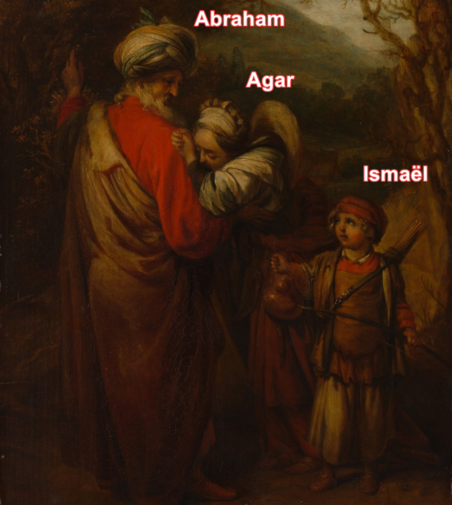Divers types de Musulmans, mais ce me semblerait un des peuples "entre deux"/en exil, par excellence.
J'estime un caractère commun aux Musulmanisans serait la sensation d'abandon et/ou d'absence du père. Peut-être ceci expliquerait pourquoi les Musulmanisans, en général, me semblèrent avoir eut une certaine rigueur et une certaine attention pour le comportement d'autrui (par exemple Salim Laïbi). Une exigence qu'ils auraient pour la société. Comme si pour eux, la société devait se substituer à un père absent. Cette rigueur viendrait aussi d'une origine divine : Abraham/Ismaël. (Mais pas forcément pour tous les Musulmanisans, car tous ne descendraient pas d'Ismaël.) Cette sensation d'absence du père, dans une telle époque, j'estime, ceci concernerait peut-être bien au moins des centaines de millions de Créatures sur terre. Au moins des centaines de millions à être portées vers l'islam.
Je dus suspecter que ceci fut issu de leur origine:
Pour les Ismaéliens : d'un côté leur mère, servante et peut-être tout de même pas véritable femme d'Abraham (sa véritable femme aurait plutôt été Sarah?). Et d'un autre côté, leur père, Abraham. Les ismaélites qui auraient ainsi une double origine: à la fois sacrée du côté du père, et d'un autre côté, "populaire", du côté de la mère. Un peuple qui aurait comme atavisme collectif une sensation d'abandon paternel intrinsèque. (Lié à la séparation d'Avraham et l'exil d'Agar (mère d'Ismaël)). Les Musulmans descendants d'Ismaël auraient ainsi cette bipolarité, cette sensation d'abandon. Un complexe de rejet, ou si ce n'est un complexe de rejet, du moins, un complexe de manque. Je verrais 4 types de Musulmanisans :
Au moins 4 types de Musulmanisans ou, si ce n'est Musulmanisan, du moins des Créatures attirées par le Musulmanisme
Créature croyant au coran, au Prophète de l'islam. Ou du moins qui se sentit attirée par cette religion ou les Gens qui en composaient sa communauté.
Créature croyant au coran, au Prophète de l'islam. Ou du moins qui se sentit attirée par cette religion ou les Gens qui en composaient sa communauté.
Créature croyant au coran, au Prophète de l'islam. Ou du moins qui se sentit attirée par cette religion ou les Gens qui en composaient sa communauté.
Créature croyant au coran, au Prophète de l'islam. Ou du moins qui se sentit attirée par cette religion ou les Gens qui en composaient sa communauté.
D'ascendance seulement Ismaélienne (Ismaël, fils d'Abraham (vers -3500 av JC?))
D'ascendance Mahométane (Mohammed, vers 700) et non Ismaélienne
D'ascendance Ismaélienne et Mahométane
Ni d'Ascendance Ismaélienne et ni Mahométane
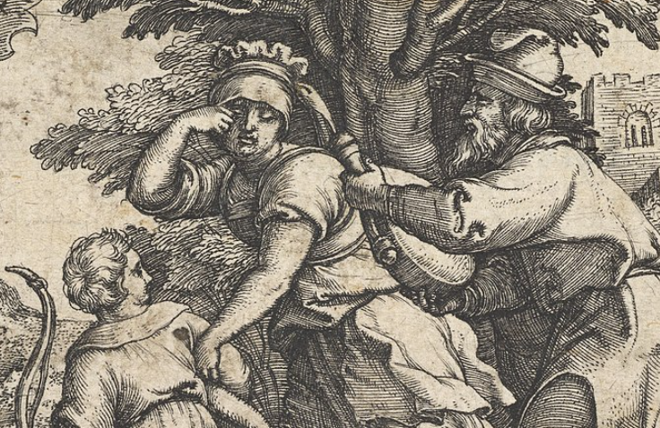
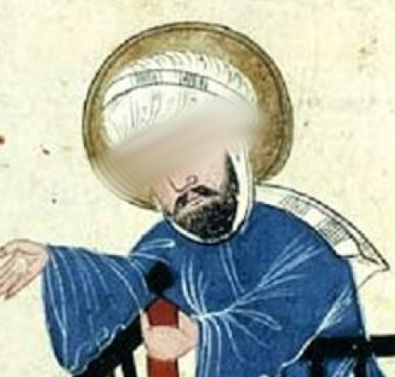
La Créature aurait cet atavisme "d'abandon" du père (Abraham).
La Créature aurait cet atavisme de Muhammad, cet atavisme d'une sensation d'un manque d'avoir eut un père.
"Abandon" du père Abraham et sensation d'absence de père (Muhammad)
Diverses Créatures qui n'auraient pas vraiment eut de père seraient-elles plus volontiers portées (de cœur, du moins), vers l'Islam? : Enfants orphelins, Enfants issus de familles monoparentales. Enfants qui auraient été maltraités par leur père. Enfants issus de familles nombreuses sans vraiment eut de père présent.
Une partie des Ismaélites ne seraient pas Musulmanisans (c'est-à-dire seraient non adeptes du Prophète Muhammad)? La question serait de savoir si Muhammad était lui-même Ismaélite d'origine.
Mais toute une partie de la psyché Ismaélite (sensation d'abandon du père) pourrait se retrouver, au moins en partie, chez beaucoup de Créatures nées en afrique, en ce que beaucoup de Créatures africaines (dont les Enfants africains) seraient issues de familles nombreuses et auraient de quoi se sentir comme abandonnées/délaissées par le père, au milieu de fratries importantes en nombre, la polygamie étant aussi fréquente en afrique, or avec Agar, Avraham aurait été aussi ponctuellement dans une polygamie.
Pour les Mahométans : la sensation de ne jamais avoir eut de père.
Pour les Créatures n'ayant eu comme ascendants ni Ismaël, ni Abraham, certaines seraient portées vers l'islam. Par exemple les Enfants nés dans des familles nombreuses, les Enfants orphelins, abandonnés par leur père.
Car une question, sans arrière-pensée particulière de ma part, pourrait se poser tout de même pour les Musulmans/magrébins du moins de france: que font-ils en france ou dans des pays appliquant moins diverses règles musulmanes que la france Alors qu'il n'y a plus tout à fait la guerre maintenant au maghreb ou en arabie. Une hypothèse serait qu'ils chercheraient symboliquement un père, le retour, ou plutôt une réconciliation avec Avraham, en quelque sorte. Ou, un père qu'ils n'auraient jamais eu, comme ceci aurait été le cas pour Muhammad (quoique Muhammad aurait eut un père jusqu'à un certain âge, mais ce père serait décédé alors que Muhammad était très jeune). Et tant que les Musulmanisans n'auraient pas retrouvé ce père, une partie d'entre eux seraient éparpillés à travers le monde, inconsciemment (ou consciemment) à la ?recherche? de ce père? Ce père qui sera/serait le futur Mahdi? Un Dirigeant qui un jour, calmement, par amour plutôt que par force, leur fera retrouver une grandeur et peut-être aussi une patrie. Les amènera au maghreb et/ou en arabie? En particulier le rôle des Musulmanisans expatriés serait de trouver ce Mahdi?
Une réponse à la question que font-ils en terre étrangère: c'est-à-dire ni sur les terres du Prophète (arabie saoudite), ni en pays Musulmanisan, serait donc qu'ils chercheraient symboliquement ce père/Père. Et tant qu'ils ne l'auraient pas retrouvé, ceci ne pourrait profondément pas aller, pour eux. Et ceci pourrait en faire un des peuples les plus intéressants, pour la délivrance finale.
Pourrait-on même déduire l'origine, l'ascendance de divers Musulmanisans (par exemple Salim Laïbi ou Maamar Metmati) en fonction de s'ils attendraient ou non le Mahdi? En fonction de s'ils porteraient une attention ou non au Mahdi.
Origine des Musulmanisans en fonction de leur attirance au Mahdi. Hypothèse.
Musulmanisan qui attend le Mahdi ou du moins qui s'y intéressa
Musulmanisan qui n'attend pas spécialement le Mahdi, qui n'en parla quasiment jamais
Genre Nader Abou Anas ou autres conférenciers qui parlèrent du Mahdi
Par exemple Salim Laïbi ou Maamar Metmati (que j'entendis rarement sur le Mahdi)
Plutôt d'origine seulement Mahométane? Ils n'auraient pas d'origine Ismaélienne? Avec ce choc émotionnel Ismaël/Abraham.
D'origine Ismaélienne? Porteraient encore en eux ce choc émotionnel, cette espèce d'épine dans le cœur par rapport au Père, par rapport à Abraham? Et auraient encore comme un froid instinctif envers le Père.
Musulmanisans. Relation à la mère et immaturité
En lien 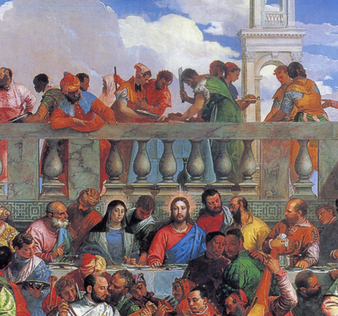avec ce rapport au père (Abraham et/ou Mahomet et/ou des pères relativement absents), beaucoup auraient un fort lien à leur mère. J'ai moi-même constaté, et je ne dus pas être le seul à le ressentir, que divers Maghrébins étaient très sensibles par rapport à leur mère. De part leur histoire (que ce fut avec Agar et/ou pour ceux en lien avec Mohamed et/ou ceux un père absent), beaucoup de Musulmanisans seraient très attachés à leur mère et moins en mesure que la moyenne, d'avoir une certaine maturité, à ce niveau là.
Si je considère que Dieu serait le Fils, alors à partir d'un certain âge, il faudrait savoir prendre ses distances, par rapport à sa mère. Le Fils, aux noces de Cana, se serait assez nettement séparé de sa mère. Il faudrait ainsi ne pas trop rester materné.
pour agrandir/diminuer la taille de l'image avec le scroll de la souris : -soit après avoir double cliqué sur l'image - soit shift+mousewheel ou alt+mousewheel
Possessivité de la mère Musulmanisante : dans cette époque, une possessivité utile quand l'Enfant est assez jeune, mais, plus âgé, en partie du moins, à la longue, cette relation mère-Enfant, une impasse incapacitante?, pour l'Enfant Musulmanisan(e)? Car la mère du Musulmanisan se substituerait trop à Dieu?
Ma suspicion : une seule solution à cette situation de possessivité excessive/ souvent étouffante/malsaine?/immaturisante : comme pour d'autres impasses, si ce n'est toutes les impasses : Dieu. Et dans l'hypothèse où Dieu serait la Trinité, alors la seule solution serait d'aller vers la Trinité.. S'émanciper : Émancipation qui sera peut-être réalisée lors de la venue du Mahdi, une nouvelle Trinitisation ("croisade"), ou sinon la venue du Mahdi, la venue du Fils.
D'ailleurs, de cet attachement à la mère, il y aurait de quoi déduire tout un tas de comportements de divers Musulmanisans par rapport aux Filles. J'ai moi-même ressenti que les Musulmanisans se comportaient assez différemment par rapport aux Filles, par rapport à pas mal d'occidentaux. (Par exemple, chez eux, l'expression "n***e ta mère" me sembla "tout un truc").
J'ai estimé que beaucoup furent immatures. Cette manière qu'eurent beaucoup de rejeter dans les relations amicales tel ou tel Garçon, pour privilégier telle ou telle Fille, ceci me semblerait plutôt malsain/immature, plutôt que de Dieu.
J'ai suspecté que toute une partie de la psyché de beaucoup de Musulmanisans, venait de cette relation à la mère :
À la fois ils auraient un problème d'affectivité, par atavisme de cet abandon du père, et ils seraient proches de leur mère. - Mais cet attachement à la mère les confinerait dans une sorte d'impasse Et finalement, ils souffriraient et passeraient une grande partie de leur temps à se plaindre Par exemple Salim Laïbi ou Stéphane Edouard. Sorte de comportement assez contradictoire dans lequel ils me semblèrent comme automatiquement se placer dans des problèmes et ensuite se plaindre.
Comme s'ils reproduisaient sociétalement leur impasse maternelle.
Ne faudrait-il donc un jour un Mahdi et/ou un Machia'h et/ou un grand Monarque et/ou le Fils, pour les sortir de cette impasse/immaturité? Pas sûr qu'ils puissent y arriver seuls.
Les Maghrébins
Les Marocains, les Algériens, les Tunisiens et plus ou moins les Lybiens.
À réfléchir à l'occident et à l'orient, j'ai pour le moins suspecté que les Maghrébins furent (et soient encore) mi-occidentaux mi-orientaux.
Musulmanisans, royaume du Père et délivrance finale
Dans l'état actuel de misère du monde, j'estime, les Musulmanisans seraient ainsi la communauté, pour commencer, la plus intéressante pour aller vers la délivrance finale. Une communauté plus proche de Dieu que bien d'autres. Un des problèmes majeurs sur terre serait que Dieu n'y réside pas (ou bien trop peu) et ce peuple, ayant en lui l'absence du père/Père, je pourrais considérer qu'ils portent en eux, particulièrement, à leur manière, cette absence du Père. À se demander si une délivrance finale du monde (le retour du Père, le retour de Dieu, le rayonnement du troisième fiat) commencera par eux et par le règne du Mahdi. Mahdi qui devrait veiller au retour du Père sur terre.
Un avenir pour les Musulmanisans ? : Le Mahdi?🆕
Le Mahdi et la divine volonté.
Mahdi = Machia'h = grand Monarque, ou des êtres distincts?
Playlist vidéos Mahdi
Playlist vidéo Mahdi :
Quelques caractéristiques du Mahdi
Descendant de Mohammed.
Son nom : Mahomet (en arabeمُحَمَّدُ, retranscrit en Muḥammad), également dit Muhammad ou Mohammed. (Il se traduit par qui "comblé d'éloge" ou "digne de louanges"). D'après certains, de la lignée de Fatima. Personnellement, je doute que que son prénom de base soit forcément Mohammed, mais probablement prendra-t-il ce prénom/surnom pendant un temps? Par exemple, son prénom de base pourrait-il être "Gilbert"?
Les Chiites l'attendent comme le 12ème imam. (Reportage "en attendant l'imam caché", dans la playlist vidéo précédente)
Devrait comme "refuser" d'être le Mahdi pendant un temps. (Ou du moins donnera t il cette impression.)
Quelqu'un qui devrait être amené à la mecque, et repousser une attaque venue de l'est.
Le Fils devrait "descendre" et devrait inciter le Mahdi à diriger le peuple.
Caractéristiques physiques : Front large, Nez aquilin
Devrait être "rectifié" en une nuit.
Mahdi / Depuis l'est, une tentative d'invasion de la mecque
Une invocation collective lors de la tentative d'invasion de la mecque par l'est?
Au niveau de la tentative d'invasion de la mecque, quand le Mahdi devrait être à la mecque, devrait-il y avoir une invocation collective? Invocation collective qui fonctionnerait, selon aussi ce que dit dit Jean-Marcel Gaudreault ~à 7:55 sur la vidéo.
Tentative d'invasion de la mecque - D'où devrait venir cette tentative d'invasion?
D'une armée formée par le qatar? et/ou les émirats arabes unis et/ou une partie de l'arabie saoudite (riyad)?
"si, aux moments tragiques où un massacre vous menace, les invocations égalaient en nombre les imprécations — note que je ne parle pas d’un nombre supérieur, mais égal —, tous les pièges et les volontés des démons et des hommes-démons seraient détruits et tomberaient sans vous faire plus de mal, comme un vautour dont les ailes sont brisées et qui ne peut plus attraper de proie." Maria Valtorta, les cahiers de 1944, 9 janvier
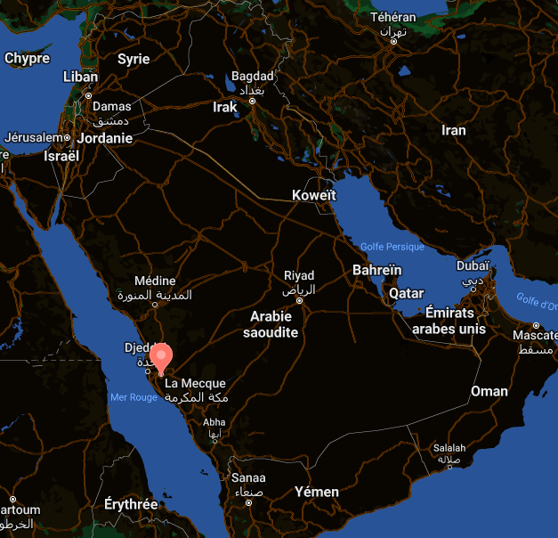
Ressemblance entre une partie de l'histoire de Ste Geneviève et une tentative invasion de la mecque à venir
Une situation d'invasion de la mecque qui pourrait trouver quelques ressemblances avec l'histoire de 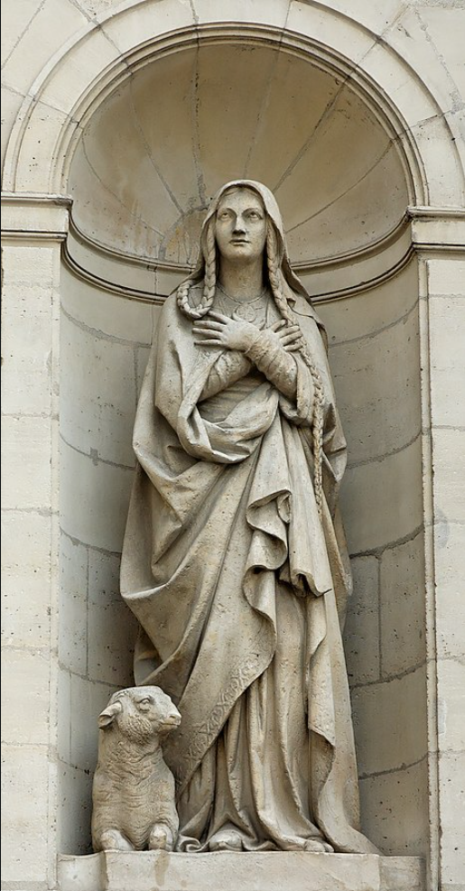
Selon la tradition, lors du siège de Paris en 451, grâce à sa force de caractère, Geneviève, qui n’a que 28 ans, convainc les habitants de Paris de ne pas abandonner leur cité aux Huns. Elle encourage les Parisiens à résister à l’invasion par les paroles célèbres : « Que les hommes fuient, s’ils veulent, s’ils ne sont plus capables de se battre. Nous les femmes, nous prierons Dieu tant et tant qu’Il entendra nos supplications. » De fait, Attila évita Lutèce (Paris). Extrait wikipedia au 8 juin 2023
Judaïsme ✡️
Considérations générales sur les Judaïsants
J'emploierais le mot Judaïsants, ou le mot "Juifs" plutôt que le mot Juifs sans guillemets. Ne serait-ce puisque j'estime que divers "Juifs" actuels sont dans des déviances et que la communauté "juive" me sembla infiltrée. Seulement lors de la délivrance finale, de la venue du Machia'h, ils me sembleraient pouvoir reprendre le qualificatif de Juifs sans guillemets. Depuis des décennies en particulier, beaucoup d'entre eux, que ce fut parce-qu'ils ne le pouvaient, ou ne le voulaient pas, ne remplirent pas leur rôle de guide des nations et pour ceci aussi, ils ne mériteraient pas le titre de juifs, de véritables juifs de Moïse, juifs d'Abraham et autres grandes figures du judaïsme. Tout autant que s'il existe actuellement sur terre un futur Machia'h, en quoi aurait-il de quoi porter ce titre, en l'état actuel du monde?
Judaïsants et circoncision : quelle empathie pour les Incirconcis et les problèmes du monde?
Hypothèse : entre autre, la circoncision, pour la plupart des Judaïsants: d'un côté les rendit plus stables, mais d'un autre les empêcha/empêche d'avoir une certaine charité, compréhension pour les non-circoncis/les nations. Il y aurait donc une impasse. Le seul lien entre les nations et les "Juifs" serait le futur Machia'h.
Circoncision, stabilité sexuelle et Machia'h
Est-ce que la circoncision favorise/a favorisé la chasteté/un certain équilibre mental/sexuel/sociétal? Une partie du corps du Garçon étant moins protégée par de la peau, alors cette partie frotterait davantage sur du tissu et/ou serait plus à l'air libre, et deviendrait ainsi davantage désensibilisée, moins à même d'exciter le Garçon? L'intelligence, la mémoire, seraient liées à la stabilité des passions sexuelles aussi (du moins d'après le livre du Ciel (Jésus/Luisa Piccarreta)). Historiquement, aurait-ce été pour les stabiliser sexuellement/comportementalement, que Dieu aurait amené les Judaïsants à se circoncire? : Pour les préparer, en tant que peuple? La circoncision, en partie du moins, expliquerait-elle, pourquoi certains "Juifs" auraient une sorte de stabilité sexuelle/comportementale et un certain pouvoir intellectuel, globalement une position d'intellectuel, depuis des siècles, comparé à des non-circoncis?
Quoiqu'il en fut et en soit, je ne prônerais pas pour autant la circoncision. Je ne vois pas en quoi parce-que Dieu aurait demandé de se circoncire à un certain moment de l'histoire, que ceci serait encore maintenant demandé. Mais enfin ceci dépend de qui on prendrait pour Dieu... Si Dieu est la Trinité, la circoncision n'alla t'elle pas "à l'encontre" de Dieu, depuis environ 2000 ans? De ce que j'ai compris, le Fils évoqua avoir souffert, de par sa circoncision, et ne demanda pas son renouvellement, pour les générations après lui (j'estime parce qu'il avait prit sur lui cette circoncision, et que le travail fut fait par lui.) :
Livre du Ciel – Tome 20 Le Fils à Luisa Piccarreta Tout petit, je me suis soumis à la cruelle blessure de la circoncision – qui m’a fait pleurer des larmes amères – non seulement à moi, mais à ma Maman et à mon cher saint Joseph. C’était la coupure que je voulais donner à la volonté Humaine, afin d’y faire couler la Divine Volonté
Mon hypothèse, voire ma sensation, c'est que dans un monde sous aura "démoniaque"? tel que le monde actuel, les Judaïsants circoncis seraient, et furent sexuellement nettement plus stables que la moyenne parce-que, entre autre, circoncis. Comme si par la circoncision, ils étaient davantage arrivés que la moyenne à s'en sortir d'une société en partie malsaine/"démoniaque" (dont l'actuel milieu scolaire mixte et les systèmes professionnels mixtes actuels). Cette circoncision leur aurait permit un certain détachement/équilibre? Les "Juifs" auraient une capacité à encaisser l'actuel monde "démoniaque" et pour beaucoup, se soucieraient en général peu de changer les règles de ce monde dans lequel ils tiendraient parmi les premières places. Et parmi les pires "Juifs", certains même auraient veillé à maintenir les "Goys" dans le péché ou parfois même à les y enfoncer? Certaines dirent parfois que des "Juifs" étaient à la tête de la p*rn*graphie, dans le monde. Alors ceci serait-il vrai? Si tel est le cas, ceci irait-il de pair aussi avec la circoncision? D'un côté cette circoncision leur aurait donnée une force dans un tel monde, mais d'un autre, ils auraient aussi plutôt été incapables d'avoir une certaine compréhension/charité pour les Incirconcis? Une partie des Judaïsants aurait eut tendance, à l'image des explorateurs de la bible, à pour le moins ne pas être trop pressés, de voir le monde ne plus être à ce point sous "aura démoniaque", puisque dans un tel monde, ils garderaient encore une place relativement élevée? Ce qui pourrait rendre beaucoup de "Juifs"/Judaïsants aux yeux de beaucoup d'Incirconcis assez insupportables, arrogants, car les "Juifs" auraient une force d'âme, mais aussi une incapacité, une léthargie à comprendre les non-Judaïsants et à les aider. Ce qui serait une force plutôt hautaine que généreuse/bienveillante. Je pourrais me demander si souvent, face au "goy" malade, pour un Judaïsant, il se passa ceci : Un "g*y" avait en lui des pulsions sexuelles assez fortes, une libido déséquilibrée pour telles ou telles Filles -(Ce qui j'estime arriva, chez le "goy" agnostique, en occident "démoniaque" actuel, assez couramment, passé la puberté, --Un occident plus ou moins "démoniaque" dans lequel il est accordé toute une prévalence dangereuse au corps (corps plus ou moins dévêtus, publicités etc.))--. Imaginons aussi que ce "g*y", à force de prendre du plaisir charnel ici et là, en devienne plus ou moins malade : malade d'une existence dissolue, malade de ruptures, malade de problèmes amoureux, de divorces. (Ce qui, j'estime, fut et doit encore être actuellement le cas pour beaucoup de Créatures, en occident du moins). Eh bien, j'aurais pour le moins de quoi me demander si souvent, beaucoup de "Juifs" auraient réagit et réagiraient encore, en général s'en seraient fichés, et encore actuellement, ils s'en ficheraient de tous ces "goys", ne serait-ce que parce qu'ils ne purent et ils ne peuvent toujours pas ressentir l'intensité de ces pulsions sexuelles de non-circoncis. Pour beaucoup d'entre-eux ils ne seraient pas à même de comprendre dans leur chair, mais aussi dans leur âme, qu'est-ce que ceci pourrait faire d'avoir ces déséquilibres sexuels de "goy"/d'Incirconcis?
Il y aurait donc eut et il y aurait encore un problème avec les actuels "Juifs": Car leur rôle serait de s'occuper des maladies du monde, à la tête des 70 nations, mais globalement, pour la plupart, ils ne le feraient actuellement pas. Au cours des dernières années divers Judaïsants me semblèrent tout de même être "descendus" vers les "Goyims" agnostiques: il me sembla que ce fut le cas, du moins, pour les Judaïsants qui donnaient des cours vidéos sur internet (genre Haïm Dynovisz ou d'autres). Mais ces Judaïsants constituent une minorité parmi les "Juifs"/Judaïsants.
Une hypothèse que j'aurais, donc, c'est que le Machia'h (si tant est qu'un Machia'h vienne un our), il ne sera pas circoncis. Ainsi il pourra avoir ressenti dans sa chair, dans son âme, ce que ceci ferait d'être Incirconcis? Et faire la jonction "Juifs"/"g*yims"? Il aura put ressentir en lui-même la psyche circoncise/"g*y"?
Pourrait-il y avoir encore davantage de dépassement de soi à arriver pour un Garçon à se stabiliser sexuellement alors qu'il ne serait pas circoncis (par rapport à un circoncis)?
La plupart des Judaïsants ne me semblèrent pas "descendre" vers les non-Judaïsants, ne partagent pas avec eux. Mais à juste titre, d'ailleurs, j'estime, parfois. Pourrais-je tout à fait leur en vouloir de ne pas "descendre" vers certains non-Judaïsants? Il en va peut-être aussi de leur survie, qu'ils ne "descendent" pas trop vers certains non-Judaïsants agnostiques.
La seule solution à envisager pour eux, serait la délivrance finale et le Mashia'h.
Communauté qui semble trop "haute" ou plutôt hautaine?, pour que commence chez eux la délivrance finale?
D'où probablement y aura-t-il une communauté entre les agnostiques et les croyants : les Musulmans, puis ensuite le Mashia'h pourra apparaître chez les Judaïsants : Mahdi puis Mashia'h, puis apparition glorieuse du Fils? Le Fils n'est pas reconnu actuellement chez les Judaïsants, mais fut-ce parce qu'il en aurait lui-même voulu ansi?
Avant la survenue du véritable Mashia'h, l'antiChrist devrait-il même apparaître en israël et se faire passer pour le Mashia'h?
Le Machia'h du peuple?
Ce qui pourrait donner du crédit à la thèse qu'en partie au moins, le Machia'h viendra du peuple, car s'il était simplement d'origine juive on pourrait imaginer qu'il ne pourrait pas faire la jonction Judaïsants-"goyims".
pour agrandir/diminuer la taille de l'image avec le scroll de la souris : -soit après avoir double cliqué sur l'image - soit shift+mousewheel ou alt+mousewheel
Relation à la gente féminine chez certains Judaïsants
Depuis des années, il dut me sembler pour le moins interpellant de voir comment d'un côté divers Judaïsants pouvaient avoir tout un respect pour les Filles, (ne serait-ce que parce-que la judaïté est transmise par elles, et assez souvent aussi, Haïm Dynovisz fit un éloge des épouses, des Filles.) et comment d'un autre côté, ils avaient put mettre à ce point de côté Marie (mère du Christ),
Luisa Piccarreta et de nombreuses autres grandes figures féminines du catholicisme (par exemple Catherine de sienne, Hildegarde de bingen, Thérèse d'Avila). Qu'est-ce que ce fut que ceci? Comment mettre à ce point de côté ces grandes figures de l'Église?
Un extrait du livre du Ciel - Relation entre jérusalem et rome
3 octobre 1928 - tome 24 - Échange entre Jérusalem et Rome. "Mon pauvre esprit pensait à bien des choses concernant la Divine Volonté, particulièrement -à la manière dont viendrait son Royaume, -comment il se répandrait… et beaucoup d’autres choses qu’il n’est pas nécessaire d’écrire. Mon bien-aimé Jésus, se manifesta en moi et Il me dit : "Ma Fille, si Rome a la primauté de mon Église, elle le doit à Jérusalem Parce que le commencement de la Rédemption était précisément à Jérusalem C’est de cette patrie, dans la petite ville de Nazareth, que j’ai choisi ma Vierge Mère. Je suis moi-même né dans la petite ville de Bethléem. Mes Apôtres étaient tous de ce pays. Même si Jérusalem, avec ingratitude, n’a pas voulu me reconnaître et a rejeté le bien de la Rédemption, on ne peut nier que l’origine, le commencement, le premier peuple qui en reçut le bien venait de cette ville. Les premiers annonceurs de l’Évangile, ceux qui établirent le catholicisme à Rome, étaient mes Apôtres, tous de Jérusalem – c'est-à-dire de cette patrie. Il y aura maintenant un échange. Jérusalem a donné à Rome la vie de la religion et par conséquent de la Rédemption Rome donnera à Jérusalem le Royaume de la Divine Volonté. Cela est si vrai que tout comme j’ai choisi une Vierge de la petite ville de Nazareth pour la Rédemption, j’ai choisi une autre vierge dans une petite ville d’Italie appartenant à Rome, et à qui a été confiée la mission du Royaume du divin Fiat. Tout doit être connu à Rome comme ma venue sur terre devait être connue à Jérusalem, Rome aura le grand honneur de s’acquitter envers Jérusalem pour le grand bien qu’elle en a reçu, qui est la Rédemption. Rome lui fera connaître le Royaume de ma Volonté. Jérusalem se repentira alors de son ingratitude. Elle embrassera la vie de la religion qu’elle a donnée à Rome. Reconnaissante, elle recevra de Rome la Vie, le grand don du Royaume de ma Divine Volonté. Non seulement Jérusalem, mais toutes les autres nations recevront de Rome -le grand don du Royaume de mon Fiat, -ses premiers annonceurs, -son Évangile – tout rempli de paix, de bonheur et de restauration de la création de l’homme. Mes manifestations n’apporteront pas seulement la sainteté, la joie, la paix et le bonheur. La Création tout entière, rivalisant avec eux, libérera de chaque chose créée tout le bien qu’elle contient et le déversera sur les Créatures."
Vidéos judaïsme
Une vidéo Arnaud Dumouch - Judaïsants
Rav Kadouri et le Machia'h
Si tant est que vienne un Machia'h et/ou le Fils, le Machia'h sera t'il aussi le Fils? Pour le moment, ceci dépendrait selon qui.
Avraham Ifrah
Quelqu'un dont j'ai vu plusieurs vidéos, en particulier il y a quelques années, (à compter du mardi 26 novembre 2024). Je me demande si pour les ravs francophones, au cours des dernières années, disons au cours du XXIème siècle, si Avraham Ifrah fut un des plus grands représentants de rabbi Nahman de breslev. Un des plus grands représentant, ce serait assez évident, quantitativement, au niveau de la quantité de vidéos qu'Avraham Ifrah produisit concernant Nahman de breslev, mais peut-être bien aussi un des plus grands représentants de Nahman de breslev quant à la la concordance entre les écrits de Nahman de breslev et la mentalité d'Avraham Ifrah.
Haïm Dynovisz
Quelqu'un, du moins pour moi, qui me sembla assez intéressant, assez ouvert aux autres. Quelqu'un d'assez prolifique aussi, avec des centaines de vidéos qu'il publia, et gratuites, au cours des dernières années (années précédants le vendredi 6 décembre 2024). Un des rares (ils sont peut-être, j'estime, sur terre, seulement au maximum 10% à avoir compris, ou du moins s'être intéréssé) à divers événements eschatologiques. Événements qui concerneront peut-être pourtant au moins 90% (si ce n'est 100%) de la population mondiale d'ici, qui sait? seulement quelques années (voire quelques mois ou semaines?). Un exemple qui laisserait penser que quand Quelqu'un s'intéresse à Dieu, il serait plutôt sur une bonne voie, une voie qui lui permettrait de comprendre le monde.
Haïm Dynovisz me sembla avoir comme disparu de son site internet, depuis quelques mois (à compter du vendredi 6 décembre 2024). Plus d'apparition avec Fabien Ababou ou de vidéo plus individuelles de la part d'Haïm Dynovisz. Je vis qu'il fit dernièrement quelques vidéos avec Elyahou Boccara. De mémoire, il n'y eut pas une disparition si prolongée depuis des années.
Haïm Dynovisz - Quelques considérations
Haïm Dynovisz - Le serpent de la génèse : un vrai serpent?
"C'est un code bien sûr, ce n'est pas un serpent"
Des fois, Haïm Dynovisz évoqua qu'"évidemment", ce ne fut pas un vrai serpent. Ce dut me sembler assez convaincu comme positionnement.
Personnellement, je ne serais pas sûr que ça n'aurait pas été un "serpent". Si tant est qu'il y eut "quelque chose", je n'écarte pas que ce ne fut pas "quelque chose" ayant en partie, l'aspect d'un serpent.
Parmi tous les animaux, il s'en trouvait un qui s'attacha plus que tous les autres à Eve. C'était une bête extrêmement familière, enjôleuse et docile. Je n'en connais aucune à quoi je puisse la comparer. Cette bête était en effet toute lisse et mince, comme si elle n'avait pas d'os. ses pattes de derrière étaient courtes et elle marchait debout. [...] Sa queue pointue traînait sur le sol. et elle avait de petites pattes courtes. très haut. près de la tête. Sa tête était ronde et exprimait une ruse remarquable : cette bête avait une langue fine toujours en mouvement. La couleur de son ventre, de sa poitrine et de sa gorge était à peu près blanc jaunâtre. et tout son dos était tacheté de brun, presque comme une anguille. Cette bête avait environ la taille d'un enfant de dix ans. Elle tournait toujours autour d'Eve. Si docile et folâtre, si agile et si curieuse de tout et de rien qu'Eve éprouvait beaucoup de plaisir en sa compagnie. Mais pour moi cette bête avait je ne sais quoi d'effrayant. et je la vois toujours aussi distinctement. source :
Aurait ressemblé, en partie, à un pingouin : queue pointue, ventre, poitrine et gorge blanc jaunâtre
une langue fine toujours en mouvement
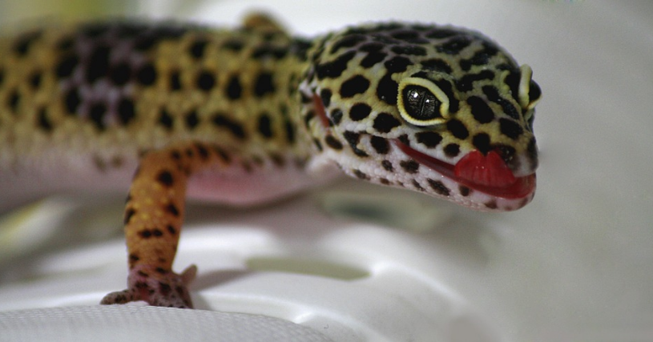
Et/ou à un dinosaure, genre vélociraptor, quoique semble pas des plus mince (mais le vélociraptor serait davantage de la hauteur d'un Enfant de 10 ans q'un pingouin. Quoique dépend des vélociraptors.)
Un des animaux qui me sembla ressembler à ce "serpent" du livre de la génèse, selon Catherine Emmerich, si ce n'est pour sa taille : l'axolotl. Attention, pour Maria Valtorta, de mémoire, ce serait un "monstre" vraiment effrayant.
Un animal assez spécial: "Une autre des particularités qui ont fait la célébrité de l'axolotl est sa capacité à régénérer des greffes endommagés ou détruits. L'axolotl est non seulement capable de reconstituer par exemple un
. Sa tolérance aux greffes est également exceptionnelle." Axolotl — Wikipédia
Axolotl plutôt blanc ici (alors que dans la vision d'Anne-Catherine Emmerich le dos est tacheté de brun), mais j'en vis des bruns aussi (mais y en avait pas sur pixabay) Vision bien gentille du serpent de la Génèse.
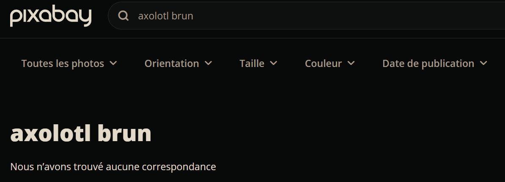
Maria Valtorta / une vision de ''la bête''
Vers 2:10, dans la vidéo normalement ci-contre: ça fait depuis le soir du 18 que Jés*s me fait voir une horrible bête. Mais si horrible qu'elle me fait horreur et me donne envie de hurler son nom est bien connu et le bon Jés*s me fait comprendre que son aspect reste inférieur à la réalité car aucune réalité humaine ne peut arriver à représenter avec exactitude la suprême beauté et la suprême laideur. 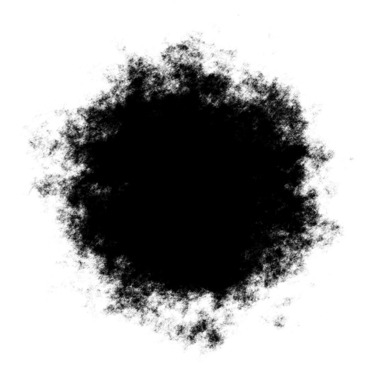Maintenant je vais vous décrire l'affreuse bête. Il me semble voir, un grand trou noir et très profond. Je comprends qu'il est très profond mais je n'en vois que l'orifice que remplit entièrement un monstre horrible. Ce n'est pas un serpent ni un crocodile ni un dragon ni une chauve souris mais il a quelque chose de tous les quatre une tête longue et pointue sans oreilles et avec deux yeux sournois et féroce toujours à la chasse de croix une bouche très vaste et armés de dents bien aigus toujours occupées à attraper au vol quelques imprudents qui arrive à la portée de ses mandibules. Bref la tête tient beaucoup du serpent pour la forme et du crocodile pour les dents.
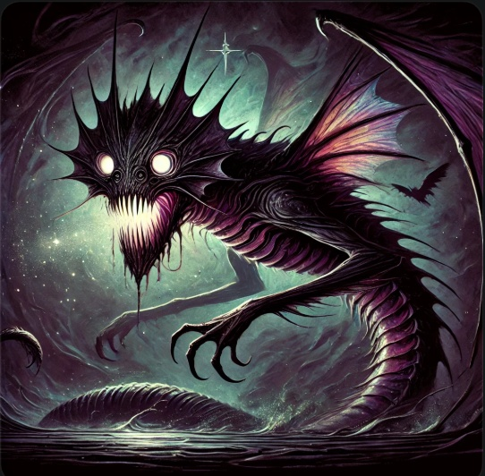
Elle déteste la lumière et elle s'appelait Lucifer. Image tchatgpt générée (le jeudi 21 novembre 2024) par rapport à quasiment tout le texte de la dictée de Maria Valtorta (pas le début du texte) "si c'est une pâle représentation de satan que doit-il bien-être"..
Un cou long et flexible qui donne beaucoup d'agilité à la tête effrayante un affreux corps visqueux recouvert d'une peau comme celle des anguilles pour donner une idée c'est à dire sans écailles d'une couleur entre le rouille, le violet et le gris foncé. Je ne saurais. Il a même la couleur des sangsues à la hauteur des épaules et des hanches jeudi hanche parce que c'est là que fini le ventre palpitant et gonflé de proies et que commence la longue queue qui se termine en pointe quatre pattes courtes et palmer comme celle du crocodile. Aux épaules deux ailes de chauve-souris la bête ne remue pas son grand corps dégoûtant elle ne remue que la queue qui s'agitent en forme de s et l'horrible tête aux yeux fascinateurs et aux mâchoires exterminatrices. Miséricorde divine quelle bête affreuse de son antre noir elle dégage ténèbres et horreur je vous assure que hier où je la voyais dans tout ça vive précision et je ne comprenais pas ce qu'elle faisait là. J'avais envie de hurler de dégoût heureusement que je voyais qu'elle ne regardait pas dans ma direction comme par répulsion répulsion mutuelle plus tôt si c'est une pâle représentation de satan que doit-il bien-être c'est assez pour en mourir deux fois d'affilée. Heureusement aussi que si la bête se tenait dans un coin mont jésus blanc beau blond était tout près tout près. Lumière dans la lumière. En comparant la lumineuse et réconfortante personne du christ avec la forme de l'autre son regard si doux clair avec le regard oblique de l'autre il y a vraiment de quoi à plaindre des infortunés pêcheurs destiné au second parce qu'ils ont repoussé Jés*s et bien maintenant que je l' ai vu je voudrais ne plus la voir parce qu'elle est trop affreuse. Je vais prier pour que le moins possible de malheureux finissent dans ses griffes mais je prie le bon Dieu de m'enlever cette vision. aujourd'hui elle est moins vive et j'en suis très reconnaissante au Seigneur est encore plus reconnaissante parce que la chère voix me fait comprendre le pourquoi de cette vision qui hier me terrorisait car je croyais qu'elle m'était destinée en guise d'avertissement.
Haïm Dynovisz - Des Créatures qui ne descendraient pas d'Adam et Ève?
De ce que je compris, pendant au moins un temps, Haïm Dynovisz évoqua que certains Humains ne descendraient pas d'Adam et d'Ève. (Aurait-il changé d'avis depuis? Je ne sais pas trop. Depuis quelques mois, à compter du mardi 26 novembre 2024, son site internet (https://ravDynovisz.tv/) ne me sembla plus mis à jour.) Certains Humains qui ne descendraient pas d'Adam et d'Ève? Ceci mériterait analyse de ma part. J'ai encore des doutes à ce niveau. D'après le livre du Ciel, excepté le Christ qui aurait eu une naissance tout à fait spéciale, de mémoire, d'après, du moins, le livre du Ciel, toutes les Créatures Humanoïdes descendraient d'Adam et Ève. (Enfin jusqu'au moment de la rédaction du livre du Ciel. Peut-être y aurait-il eut des expériences génétiques de réalisées dans des bases secrètes, depuis, par exemple à dulce, aux états-unis? à partir des années 50? 60?)
"LE SENS PROFOND DE L’EXIL DE MITSRAIM -REVELATION INCROYABLE- 5 AVRIL 2022 – Site du Rav Haim Dynovisz
Comme je l'ai déjà expliqué de nombreuses de fois, sur 7 milliards de personnes qu'il y a dans ce monde pas tous sont des descendants d'Adam et d'Ève. Bien sûr que non. Comme je l'ai déjà expliqué, le premier tordu qui me dit que Mengele ou Hitler étaient des descendants de Adam et Ève, il mérite qu'on lui arrache les yeux.
Je me demande si ce fut du sensationnalisme, tout de même, ce passage concernant Mengele. Et puis cette déclaration selon laquelle il mériterait qu'on lui "arrache" les yeux... Pas un comportement des plus pacifique.
Haïm Dynovisz - Des Créatures non descendantes d'Adam et Ève - Vidéo relative
Haïm Dynovisz - Rav ou pas rav?
Dans diverses vidéos de 2022, il évoqua son souhait de ne plus se faire appeler rav (du moins dans certaines vidéos avec Fabien Ababou), mais dans le même temps, il avait toujours un site internet appelé
. Et dernièrement, le 14 septembre 2022, un logo de site internet tel que celui-ci : De plus, dans une autre vidéo, il dit "quand j'étais rav à l'armée".
Bilan: sur ce point, à n'y plus rien comprendre.
Haïm Dynovisz - Une déclaration sur les Chiites
Déclaration peut-être limite quand même.
Vers 29:45 LE MACHIAH EST PRESENT DANS CHAQUE GENERATION -25 JUILLET 2022 – Site du Rav Haim Dynovisz
0:38 : "la crucification est un supplice romain. C'est les romains qui l'ont crucifié." Oui, mais ceci se serait déroulé avec l'aval de certains "Juifs".
"Ce ne sont pas les juifs qui ont tués Jésus."[...] Maintenant je n'arrive pas à comprendre pourquoi une grande majorité surtout chez les catholiques disent que ce sont les juifs qui ont tué Jésus."
Mais quand est-ce que les Chrétiens/les catholiques auraient déclarés que les juifs auraient physiquement tués le Christ? Genre ceci aurait été des juifs qui donnèrent les coups de fouets et qui l'accrochèrent sur une croix. (S'il y eut des chrétiens qui déclarèrent que des juifs donnèrent des coups de fouets et clouèrent le Fils, je suspecte qu'il n'y en eut pas beaucoup à déclarer ceci). Bien entendu que j'imagine que la plupart (si ce n'est tous) les Chrétiens ne croient pas que ce furent des juifs qui donnèrent les coups de fouets au Fils et qui l'accrochèrent sur la croix. (D'ailleurs la plupart des films sur le sujet ne montrent pas des Créatures habillées en tenue de juif donner les coups de fouets au Fils ou poser le Fils sur la croix, ou donner les coups de marteaux sur les clous de la croix. Mais ces films montrent des romains faire ceci.)
Si les Chrétiens (ou certains d'entre eux, du moins) évoquèrent que ce furent les juifs qui tuèrent le Fils, ils évoquèrent que ce furent eux, mais que ce furent eux à titre symbolique (pas physiquement). Car ce serait tout de même des Créatures de l'époque s'étant prétendues juives, qui auraient - jugé le Fils comme devant être condamné à mort - livrées aux romains le Fils. - (entre autres) préférés libérer Barrabas plutôt que le Fils - auraient dit crucifie le (ou des paroles semblables) devant Ponce Pilate.
Déroulé :
Un plan mis en place avec Judas pour attraper le Fils. 2. Judas révèle où se trouve le Fils. 3. le Fils se fait attraper. 4. le Fils est jugé pas les membres du sanhédrin. (Tous ne le jugèrent pas d'ailleurs comme méritant la mort) 5. le Fils est livré aux romains, par des "Juifs". 6. Ponce Pilate ne trouve pas particulièrement à redire par rapport au Fils et demande à la foule ce que l'on fait de lui. 7. Ponce Pilate demande si on le libère lui ou Barrabas. 8. Des "Juifs" présents sur place auraient préféré libérer Barrabas plutôt que le Fils. 9. Certains auraient scandés, sinon "crucifiez le", des paroles semblables.
(Voir éventuellement le site suivant sur Maria Valtorta, à propos de Judas l'Iscariote.
Donc certes, ce n'aurait pas été des juifs qui auraient donnés les coups de fouets, mais symboliquement des "Juifs" auraient validé la mise à mort du Fils. Et puis il y aurait eut un jugement du Fils avant qu'il fut livré aux romains. Et au cours de ce jugement, une partie des "Juifs" du sanhédrin de l'époque auraient décidé de condamner le Fils. Ils l'auraient reconnus coupable. Plusieurs films présentèrent ces épisodes que je viens d'évoquer.
Le corps au dessus de l'âme?
Une contradiction par rapport à une partie du catholicisme
LE ARI ZAL -LE CORPS SERA UN JOUR AU DESSUS DE L’AME-15112023
Hiérarchie corps et âme - Catherine de sienne - Une partie du livre des dialogues
Dans les dialogues, à un moment, il est évoqué que l'âme est au-dessus du corps. (Je mettrai peut-être plus tard la référence).
Judaïsme / Raphaël Sadin
Raphaël Sadin me sembla avoir assez bien compris, au moins en partie, la psyche occidentale. Une psyche Édomite? pour beaucoup de Créatures occidentales. Mais une mentalité Édomite, entre autres, qui devrait aussi amener le messie...
Les 4 empires
Vidéo assez intéressante pour comprendre, ou du moins réfléchir à une grande partie de la mentalité occidentale moderne. À travers l'étude de ces 4 civilisations, des millénaires de psyche qui ont traversé l'histoire. Des psyche qui concernèrent des millions, voire même des milliards de Créatures.
"Le Machia'h est-il déjà parmi nous ? (Rav Raphaël Sadin) - YouTube https://www.youtube.com/watch?v=Fc1X-fBf1QQ " Une grande partie des Occidentaux qui se trouvent dans une mentalité Édomite. (Sorte de nihilisme à bas bruit.) Mais Édom et Ismaël devraient amener le messie...
Cette notion de 4 empires par rapport au Christianisme:
"Oh ! amis ! Savez-vous par quel sentier vient Satan ? Trois sont les chemins généralement battus, et il en est un qui ne manque jamais. Trois : la sensualité, l'argent, l'orgueil de l'esprit. Vendredi 29 septembre 1944. (Saint Michel). Maria Valtorta (
elle-même est une arme dans la main de Satan, et il ne néglige pas d’imprimer son caractère de séduction sur ses instruments. Il les attire ainsi vers ses abîmes et, là, il peut les atteindre au cœur en leur inoculant le triple péché. Et Judas avait dans son cœur les concupiscences de l’argent, de la chair et du pouvoir. C’est pour ces
qui le persécutaient et qu’il n’a pas voulu vaincre, qu’il devint le Déicide. Lorsque Satan veut saisir une proie, il présente la femme, pour la conquête de laquelle il est nécessaire de posséder argent et honneurs. Une fois qu’il l’a attrapée, il lui refuse l’argent, les honneurs et la femme, pour ne laisser que désespoir et mort. Catéchèse du dimanche 2 janvier 1944. Maria Valtorta
pour agrandir/diminuer la taille de l'image avec le scroll de la souris : -soit après avoir double cliqué sur l'image - soit shift+mousewheel ou alt+mousewheel
J'eus quelques difficultés à comprendre la distinction entre grèce, perse et babel. J'ai encore des doutes actuellement (septembre 2023)
Babel = (statues babylonniennes) La perse = le corps l'argent? ou argent+sensualité? La grèce = l'orgueil de l'esprit? ou argent+sensualité+orgueil de l'esprit? Edom = rome = sensualité+argent+orgueil?
Babel, la perse et la grèce ne serait chacune qu'un aspect du démoniaque, chez un individu, mais Édom, ce serait une propension "démoniaque" qui aurait entièrement l'individu : - pour ses instincts sexuels (babel) - par son envie de pouvoir (la perse) la perse = babel+la perse? - par sa psyche (la grèce) la grèce = simplement la grèce ou la grèce+la perse+babel? Édom = babel+la perse+la grèce ?
Judaïsme
Dans la perspective du Christianisme tel que je le comprendrait
L'air
Babel
chair + essentiellement pouvoir
mais encore des dieux (statues babyloniennes)
L'eau
La perse
chair + essentiellement argent
mais encore des dieux (dieux perses)
Le feu
La grèce
chair+argent+pouvoir + dieux
mais encore des dieux (dieux grecs)
La terre
Rome
argent+chair+pouvoir sans Dieu
pour la plupart : apostasie : plus de Dieu(x) : nihilisme - argent généralisé : capitalisme - chair généralisée (corps +ou- dénudés) - pouvoir non laissé à Dieu (rationalisme, école, diplômes, politique)
pour agrandir/diminuer la taille de l'image avec le scroll de la souris : -soit après avoir double cliqué sur l'image - soit shift+mousewheel ou alt+mousewheel
Se la settimana avesse più giorni, te ne avrei imposto quattro di penitenza per il Sacerdozio. Perché esso è necessario alla vita dello spirito come i quattro elementi vitali alla Terra: luce, acqua, aria e fuoco. Ma come può esser luce se è spento o offuscato? Ma come può esser acqua se è arido? Ma come può esser respiro se è, di suo, asfittico? Ma come può esser fuoco se è gelo?
D'après Valtorta, ce serait : lumière, eau, air et feu.
Une autre vidéo de Raphaël Sadin, sur ces 4 empires (vidéo sortie quelques années après la première vidéo plus haut, sur les 4 empires)
. Elle aurait vécue de la fin du XIXᵉ siècle au milieu du XXᵉ. Pendant des décennies alitée et en communication avec le Fils. Aurait rédigé le "livre du Ciel", un livre qui aurait été dicté pour majeure partie, par le Fils. Taille de l'œuvre en format "livre de poche" : au moins 5000 pages, sur 36 "tomes" (ou cahiers).
Position/statut de Luisa Piccarreta par rapport au Fils et à la V. Marie
De ce que j'ai compris, Luisa Piccarreta tiendrait la troisième place : 1.La Trinité 2.Marie/Reine du Ciel 3.Luisa Piccarreta
Un extrait à propos de Luisa Piccarreta, extrait issu du livre du Ciel D'autre part, afin que ma Volonté soit connue et que le Ciel s'ouvre pour la laisser descendre sur la terre afin qu'elle puisse y régner comme elle le fait au Ciel, J'ai eu à choisir une autre petite parmi toutes les générations. Puisqu'il s'agit de la plus grande œuvre que je veux accomplir - restaurer l'homme dans ses origines et lui ramener la Divine Volonté qu'il a rejetée, - lui ouvrir mes bras et le recevoir de nouveau au sein de ma Volonté, mon infinie Sagesse appelle la plus petite, sortie de rien. Il était juste qu'elle fut petite: - si J'ai placé une petite à la tête de la Rédemption, - Je devais placer une autre petite à la tête du « que ta Volonté soit faite sur la terre comme au Ciel. » Avec deux petites, Je devais réaliser -l'objectif de la création de l'homme, -mes desseins sur lui. À travers l'une, - Je devais racheter l'homme, - le laver de sa laideur avec mon Sang et - lui accorder le pardon. A travers l'autre, je devais ramener l'homme - à ses origines, - à sa noblesse perdue, - aux frontières de ma Volonté qu'il avait franchies, l'admettre de nouveau devant le sourire de mon Éternelle Volonté, afin que Nous puissions Nous embrasser l'un l'autre et vivre l'un dans l'autre. Le but de la création de l'homme n'était rien d'autre que cela. Ce que J'ai décidé, personne ne peut s'y opposer. Les siècles peuvent s'écouler mais, -tout comme la Rédemption a été réalisée, -l'homme va revenir dans mes bras tel que prévu lors de sa création. Pour ce faire, J'ai dû d'abord choisir celle qui serait la première à vivre dans ma Volonté Éternelle, -la lier à toute la création, et -vivre avec elle sans séparation de nos volontés, sa volonté et la nôtre ne faisant qu'un. Tome 16-– D'où la nécessité qu'elle fut la plus petite, issue de la création de manière à ce que, -en se voyant si petite, elle veuille fuir sa volonté en la liant étroitement à la nôtre au point de ne jamais faire la sienne , et que, bien que petite, elle puisse vivre avec Nous à partir du souffle par lequel nous avions créé l'homme. Notre Volonté l'a gardée fraîche et belle Elle est notre sourire, notre amusement. Et nous faisons d'elle ce que nous voulons. Oh! comme elle est heureuse! Jouissant de sa petitesse et de son heureuse destinée, -elle a supplié pour ses frères et -elle n'a rien fait d'autre que de compenser pour eux auprès de Nous pour tout le mal qu'ils nous font en demeurant détachés de notre Volonté. 10 novembre 1923 - -Le livre du Ciel
La série de films star wars et la ''divine volonté'' du livre du Ciel
La force, le côté obscur, les Jedis, tout serait vrai aussi... dans le monde réel?
Il me sembla y avoir comme une ressemblance entre divers concepts du livre du Ciel et divers passages de star wars.
la force
la divine volonté
les jedis
les saints
le côté obscur
le diable, les démons, les puissances démoniaques
La force, le côté obscur, ces concepts dont il est question dans les films star wars seraient vrais aussi dans le réel? Pas simplement dans ce film? Et même plus vrais dans le réel que dans ce film?
À l'occasion de ce lundi 16 décembre 2024, j'ai fait un montage star wars. Sur la base du trailer de star wars 7. Star wars 7 qui sortit au cinéma le 16 décembre 2015, en france. (source youtube du trailer : https://www.youtube.com/watch?v=mH9Ygfs5avo)
Film à l'occasion du lundi 16 décembre 2024
(montage vidéo, au moins quelque peu édité depuis le 16 décembre 2024) Quelques Gens apparaissant dans cette vidéo:
La ''divine Volonté'' du livre du Ciel et la force des films star wars
Le livre du ciel, 1er Mai 1926 Le Fils à Luisa Piccarreta "Ma volonté est en perpétuel mouvement. Elle ne s'arrête jamais. Si son mouvement cessait, ce qui est impossible, la Création n'aurait plus de vie, le Soleil, le ciel étoilé, les arbres, l'eau, le feu, les créatures, tout se dissoudrait dans le néant Ceci signifie que ma Volonté avec son évolution éternelle, -est la vie de toute chose créée, -Elle lie tout, -Elle est plus que l'air qui permet de respirer, développer, pousser tout ce qui sort de nos mains. Tu comprends donc l'affront subi par les créatures, qui, alors qu'Elle est la vie de tout et le centre de toute chose, sans Elle rien ni aucun bien n'existerait, ne veulent reconnaître ni sa domination, ni que sa vie qui coule en elles C'est pourquoi celle qui reconnaît la Vie de ma Volonté en elle et en toute chose, est le triomphe de notre Volonté et la conquête de nos victoires, elle est la contrepartie de notre amour au mouvement perpétuel, notre Volonté la liant à toute la Création, lui faisant faire tout le bien opéré par ma propre Volonté. Par conséquent, tout lui appartient et moi Je l'aime tellement, au point de ne savoir rien faire sans elle, du fait que, en vertu de ma Volonté, nous sommes la même vie, le même amour, une seule palpitation, un seul soupir." Le livre du Ciel tome 19, téléchargé depuis lumenluminis
Quelques propos du personnage yoda, dans le film star wars 5
La "divine Volonté"..
Nous serions tous investis de cette "divine Volonté" (ce qui serait la force dans star wars), je mettrai peut-être plus tard des extraits du livre du Ciel, à ce propos. Mais même si nous serions tous investis de cette "divine Volonté", il y aurait tout de même des différences entre les uns et les autres, par rapport à cette "divine Volonté". Peut-être plus tard aussi, je mettrai au moins un extrait du livre du Ciel, à ce propos.
En plus de Luisa Piccarreta, sur ce site up778.github.io, j'ai assez souvent cité des textes qui aurait été dictés à Maria Valtorta. S'il se trouve qu'elle rédigea sans rature une grande partie de son œuvre, que ce soit l'Évangile tel qu'il m'a été révélé ou ses cahiers de 195 à 1950, ceci serait vraiment impressionnant. Jamais bien compris quelle fut la rationalité de ceux qui la rejetèrent abruptement.
Personnellement, un passage qui dut m'interroger, concernant Maria Valtorta, ce fut un passage sur les Extra-terrestres. Selon ce passage qui lui aurait été dicté par le Fils, (je crois c'était au cours des dictées sur l'évangile tel qu'il m'a été révélé) il y aurait des millions d'autres mondes que le notre. Des mondes habités... Et la terre serait la plus corrompue. Étonnant. Que la terre soit relativement corrompue.. ok, mais la plus corrompue, sur des millions de mondes... Est-ce qu'une partie de l'œuvre de Maria Valtorta aurait été "trafiquée"? Cette partie sur les Extra-terrestres?
Un des Christianisants les plus intéressants, il me sembla. Je vis diverses vidéos de lui, sur sa chaine youtube. Il me sembla avoir compris des notions fondamentales.
Quelques liens : Travaux de Jean-Marcel Gaudreault
''Jean Rémi'' / Chaine youtube ''Rencontre avec Dieu''
J'ai trouvé "Jean Rémi" ressemblait à Quelqu'un que j'avais déjà vu par le passé. (Mais enfin il s'appelait pas "Jean Rémi"). Est-ce qu'alors le nom "Jean Rémi" serait un vrai nom? Un pseudo? (Du style un jeu de mot) (Y aurait-il aussi un lien entre ce nom et un pseudo qu'il y eut pendant un temps sur gab, un pseudo qui était Rémi gr*tion).. ? (Pendant au moins un temps, je dus, en partie, pas être trop à l'aise, avec diverses vidéos de "Jean Rémi", parce que comme je me demandais s'il s'agissait de Quelqu'un qui avait un autre nom que "Jean Rémi", je dus quand même me demander si y avait quand même "tromperie".)
vidéo de présentation de "Jean Rémi"
Je fais quelques commentaires sur cette vidéo de "Jean Rémi" ou (Rémit? / Rémis? Rémie?Remi?), de la chaine youtube ''Rencontre avec Dieu''. Rencontre avec Dieu - YouTube https://www.youtube.com/@RencontreavecDieu./videos
Dans ce tableau, une analyse de quelques propos de la vidéo de "Jean Rémi", à propos de Luisa Piccarreta / le livre du Ciel, et de divers Intervenants
timing
propos de "Jean Rémi"
quelques commentaires, parfois, de ma part
Pourquoi je vous dis ça ? C'est parce que je ne sais pas si Luisa Piccarreta est réellement,
vient réellement de Dieu ou pas.
Peut-être que Dieu m'en excuse et que Luisa Piccarreta, si elle est au Ciel, me pardonne.
Je n'ai peut-être pas les connaissances suffisantes ou je suis peut-être dans l'erreur quand je pense qu'il faut se méfier de l'œuvre de cette femme et de surtout ce que fait cette communauté en permanence sur Internet.
Moi, j'utilise toujours la même clé de discernement, celle que le Christ nous donne. Vous jugerez un arbre à ses fruits. Un bon arbre porte de bons fruits.
"Vous jugerez un arbre à ses fruits" "Un bon arbre porte de bons fruits." Qu'est-ce que "Jean Rémi" considéra être l'arbre? 🌳 : le livre du Ciel? Certains de ceux/celles qui s'exprimèrent à propos du livre du Ciel?
🔑 Est-ce que l'on dispose de suffisamment de recul pour juger quels auraient été les fruits du livre du Ciel? J'estime plutôt que non. Je ne compris pas bien cette logique de on juge un arbre à ces fruits, appliquée à cette situation des Intervenants sur le livre du Ciel. À ce moment là,
pour agrandir/diminuer la taille de l'image avec le scroll de la souris : -soit après avoir double cliqué sur l'image - soit shift+mousewheel ou alt+mousewheel
est-ce qu'aussi parce Certains se seraient permis diverses déviances en amérique du nord ou du sud, lors de la conquête de l'amérique, au nom du Christianisme, alors le Christianisme serait à mettre à la corbeille? (Une conception, il me sembla, qu'eut le rav Ron Chaya, il y a quelques années, à propos du Christianisme. Les Chrétiens ont fait ceci en amérique du sud --> Chrétiens pas bien) Faudrait-il juger le "Christianisme" comme un "mauvais arbre"?, parce que certains, au nom du Christianisme, auraient commis ceci/cela aux amériques.
De la même manière est-ce que parce-que Certains seraient "égarés" par rapport au Livre du Ciel, alors est-ce que cet égarement signifierait que le livre du Ciel serait forcément pas bien?
Je dirais ce n'est pas parce qu'il y a de "mauvais Cueilleurs", que l'arbre est forcément "pourr*" (À moins qu'en parlant d'arbre gâté, "Jean Rémi" faisait référence au texte du livre du Ciel en lui-même, mais alors, j'estime qu'il faudrait qu'il développe, là dessus)
Je dirais il est peut-être aussi un peu tôt pour avoir une vision assez globale de ce qu'auraient produits les écrits du livre du Ciel. Ces écrits auraient-ils même été compris, jusqu'à présent?
On ne trouve pas de bons fruits sur un arbre gâté.
Je dirais plutôt : un mauvais cueilleur ne peut pas trouver de bons fruits, ou sinon, pas, relativement peu, sur un arbre qui pourtant, peut-être bien, en contient.
Voilà.
Et bien, moi, ce que je vois de gens qui suivent Luisa Piccarreta, je vois des Gens d'un orgueil absolu.
Problématique intéressante, de chercher à comprendre s'il y eut de l'orgueil chez divers Intervenant(e)s qui se prononcèrent sur les écrits du "livre du Ciel"🌌 (Par exemple "Colombine", Ignis ou Dominique Duten), je dirais. Mais assez fort, l'expression orgueil absolu, je dirais : Serait-ce le genre d'expression à réserver plutôt à des "entités" du style le diable ou l'antéChrist? Mais je dirais c'est quand même intéressant de se pencher sur la question de savoir s'il y eut de l'orgueil
En l'état (mai 2025), je connais trop peu divers Intervenant(e)s sur le livre du Ciel, pour juger, pour ma part, s'il a s'agit, chez eux, "d'orgueil absolu". Je n'écarte pas qu'il puisse s'agir d'un niveau d'orgueil assez élevé, s'il se trouve que Certain(e)s se servirent du livre du Ciel, Luisa Piccarreta ou autres Mystiques catholique, pour flatter leur égo. Dominique Duten me sembla parfois faire preuve d'une certaine modestie.
Désolé.
Je n'ai pas dit que tous étaient comme ça.
Que les gens qui suivent cela ne prennent pas mal, ce n'est pas une attaque.
Je fais juste cette vidéo parce que je sens dans mon cœur qu'il me faut prévenir des abus spirituels.
Je pense qu'avec cette femme, on est typiquement, avec les écrits de cette femme, dans quelque chose...
En tout cas, ce que sa communauté en transparait, je vais être cru, mais j'avais appelé ça de la br*nl*tte spirituelle.
Et je pense que c'est les gens qui suivent cette femme...
Peut-être en contradiction avec ce qui vient d'être dit (à 1:47) : "Et bien, moi, ce que je vois de gens qui suivent Luisa Piccarreta" (mais enfin s'est "corrigé" ensuite : "Je n'ai pas dit que tous étaient comme ça." "les gens qui suivent cette femme sont mal inspirés"
Je n'ai pas dit que cette femme venait du diable, mais les gens qui suivent cette femme sont mal inspirés.
Pourquoi ? Parce qu'on voit dans leurs mots, on voit dans leurs écrits, on voit dans leurs vidéos, on voit dans leurs commentaires, en tout cas de ce que j'ai vu, un orgueil absolu.
assez fort, quand même, je dirais, l'expression orgueil absolu Mais je me suis demandé, si pour certain(e)s Intervenants, sur Luisa Piccarreta, ils comprenaient vraiment ce qu'ils disaient: Quand parfois j'entendis "nous entrons dans ta divine volonté" (plus tout à fait sûr de qui dit ceci. Probablement "Colombine", mais je devrais vérifier ceci plus tard): est-ce que juste il suffirait de dire ceci, pour "entrer" dans la "divine volonté? Suffirait-il de le dire? Ne serait-ce pas vendre la "peau de l'ours" 🐻 avant de l'avoir t*é?
00:15.080 --> 00:25.360 Jésus, nousnous immergeons en toi, dans ta divine volonté. Nousnous unissons à toi. Nous nous unissons à ta divinité, à ton humanité, à ta volonté.
Suffit-il de dire "nousnous immergeons en toi, dans ta divine volonté",pour que véritablement, effectivement, il y ait "immersion"?🐟🌊🚿 Et qui serait, ce "nous"? À qui aurait fait référence "Colombine" : Les Gens qui regardent ou regarderont cette vidéo? Certains Gens en particulier? L'Humanité toute entière?
00:25.360 --> 00:30.780 Nous nous identifions à toi. Nous voulons, doux Jésus, être comme d'autres toi sur la terre.
"Nous nous identifions à toi." Là aussi, suffit-il de dire "Nous nous identifions à toi.", pour qu'effectivement, il y ait "identification"? "Nous voulons, doux Jésus, être comme d'autres toi" : une phrase qui me semblerait plus modeste.
00:30.980 --> 00:40.840 Des images, des échos, des miroirs de la Trinité. Nous nous consumons en toi. En toi, adorable vie, nous perdons le rien, le néant que nous sommes.
"Nous nous consumons en toi" 🔥
00:40.900 --> 00:49.740 Nous fusionnons nos volontés dans la tienne. Nous te faisons l'offrande de nos volontés pour que tu t'en serves comme espace, comme terrain de jeu, comme champ d'action.
"Nous fusionnons nos volontés dans la tienne."
Je connais, j'estime, assez peu, les vidéos de "Colombine". En ce jeudi 22 mai 2025, au moment de rédiger ces quelques considérations sur une partie d'une des vidéos de "Colombine", j'estime je dus en voir maximum quelques unes, et sinon totalement, partiellement. Donc je ne prétends pas porter un jugement d'ensemble. Juste je donne un point de vue sur le peu que j'en vis. Enfin des tournures de phrase du style "nous entrons dans ta divine volonté", je ne serais pas étonné, que "Colombine" en prononça des dizaines, si ce n'est des milliers (y aurait de quoi qu'elle prononça ce style phrase, ne serait-ce qu'à considérer le nombre de vidéos qu'elle aurait produite (au moins 1500, si je m'en réfère au nombre que je vis sur sa chaine youtube))
Des gens qui pensent qu'ils vivent la divine volonté, c'est-à-dire qu'ils sont le fruit de la divine volonté.
J'aurais de quoi suspecter que "Jean Rémi" pourrait faire référence à "Colombine", pour ce qu'il dit dans ce passage.
Par contre, Dominique Duten ne me sembla éméttre un avertissement "Des gens qui pensent qu'ils vivent la divine volonté, c'est-à-dire qu'ils sont le fruit de la divine volonté." Certain(e)s, comme "Colombine", j'eus de quoi me demander s'ils se croiraient dans la "divine volonté", mais pour D. Duten, en tout cas dans une partie de la vidéo suivante, il me sembla assez modeste
"Il y en a qui s'imaginent vivre dans la divine volonté de manière permanente. Et Euh. Ils sont dans l'erreur. Ils sont dans l'illusion. ça ça peut être dangereux comme vous dites. Hein. Et surtout très dangereux si on est fixé dans cette idée, qu'on vit dans la Divine Volonté. Alors on peut rien vous dire. Vous voyez il y en a comme ça, on peut rien leur dire ils sont dans la Divine Volonté les gars voà on baisse l'échines nous on passe à côté mais on commence moi vous savez ils sont dans la divine volonté on peut rien leur dire et ils sont dans l'illusion ils peuvent pas avancer, ils peuvent pas s'en sortir, ils sont satisfaits, hein, et ben pardon ben ça c'est pas la vie dans la divine volonté"
Ça se répand comme une traînée de poudre sur Internet.
"Jean Rémi", vers 2:50 : "Ça se répand commeune trainée de poudresur internet." Je dirais une trainée de poudre, ça dépend : - d'un point de vue d'ensemble, par rapport à la population en général : pt'être exagéré, quand même, l'expression "comme une traînée de poudre", si je considère le nombre de Gens qui semblent dans la Théologie (les vidéos de Théologies font pas bien plus de quelques centaines ou milliers de vues, en général, sauf youtubeur important) - pour certain(e)s qui s'intéressèrent à Luisa Piccarreta, je conçois que certain(e)s firent pas mal de vidéos, oui. Et qu'il y ait eut, pour eux, un effet "trainée de poudre". Par exemple "Colombine" (au moins 1500 vidéos.. d'après ce que je vis sur sa chaine "Les petits enfants de la Divine Volonté - YouTube https://www.youtube.com/@lespetitsenfantsdeladivine/videos ) "Des gens qui pensent qu'ils vivent la divine volonté" Aurait-il songé à "Colombine", quand "Jean Rémi" évoqua ceci? (Plus d'une fois, "Colombine" dit qu'elle plongeait dans la "divine volonté")
''Jean Rémi'' / Analyse, d'une partie de sa vidéo ''les prophéties apocalyptiques d internet'' 🆕
Dans cette vidéo, ''Jean Rémi'' me sembla avoir dit des choses pas mal sur les complots: 🆕
Citation de la vidéo https://www.youtube.com/watch?v=IA-ZvlQFI2I "les prophéties apocalyptiques d internet, discernement"
vers 25:30 "Oui y a tel secret qui a été caché, qui a été b*lancé au fin fond de je ne sais quoi. Et si le Seigneur voulait révéler un secret caché, Il le fait instantanément. Il nous envoie un prophète qui va te b*l$*ncer ça avec des signes. Il nous envoie un Élie. Un Élie. Et il nous révèle des signes incroyables et il nous révèle quelque chose s'il faut vraiment le révéler. C'est ça Dieu. Il y a pas des des complots humains qui peuvent en gros, euh couper la la le plan de Dieu. Mais c'est des co**er*es ça c'est.. tout complot humain qui il est permis par Dieu. Mais Dieu s'en sert, de tous ces malins, qui complotent pour les retourner au bon moment."
L'illumination des consciences / garabandal. Pourquoi une telle conviction que ce ne puisse arriver🆕
Pas compris pourquoi "Jean Rémi" me sembla si convaincu qu'il n'y aurait pas de garabandal / "illumination des consciences". De mémoire, si je ne fait pas erreur, au moins une fois, il y a moins de 5 ans, moins de 5 ans précédants le mercredi 21 mai 2025,
se prononça aussi dans ce sens qu'il n'y aurait pas de garabandal.
Illumination des consciences / garabandal
Quelques propos de "Jean Rémi"
Considérations de ma part
vers 27:00: Et il n'y aura aucun événement matériel qui conditionnera votre salut ou non. Aucun événement matériel ni grande pentecôte ni grand événement ni grande illumination des consciences et cetera tout ça c'est au Ciel qu'on l'aura.
Je compris pas trop pourquoi "Jean Rémi" me sembla si sûr de lui-même, qu'il n'y aurait pas "d'illumination des consciences" qui "conditionnera votre salut ou non". Je comprend pas pourquoi, avec certitude, il ne pourrait y avoir un événement mondial, qui agirait sur les consciences. Un événement qui pourrait, plus ou moins, quand même, impacter, du moins, certaines consciences et "influencer" le choix d'un tel ou d'un autre. Libre aux uns et aux autres, ensuite, d'en faire ce qu'il veulent de cet événement (si tant est qu'un tel événement arrive un jour). (Peut-être si un tel événement arrivait, Certains y croiraient mais d'autres pourraient toujours dire : c'est la cia qui a fait cet événement, ou c'est du "contrôle mind" (contrôle de l'esprit) fait par le gouvernement)...
Enfin faudrait voir ce que "Jean Rémi" comprit par illumination des consciences.
C'est juste avant de mourir c'est à l'heure de la mort. C'est pour ça qu'on dit à la Sainte Vierge priez pour nous maintenant et à l'heure de notre mort. Parce que c'est à l'heure de la mort que vient le jugement. Après c'est trop tard on est mort. On se retrouve devant Dieu dans l'état qu'on qu'on qu'on décède. Et c'est là que on sera jugé voilà c'est là qu'il y a une grande illumination. C'est là que même les athées même les gens d'autres religions vont se retrouver devant le Christ vont se retrouver devant Dieu le vrai Dieu Père Fils et Saint-Esprit et c'est ça l'illumination des consciences wou ah mais c'était vraiment lui Dieu finalement pour un athée mais il existe vraiment finalement. Vous voyez ce que je veux dire.
Mais c'est un événement spirituel c'est un événement lié à la fin de notre vie sur terre. Et non pas dans notre vie sur terre un événement qui va prédisposer notre salut. C'est pas vrai. la C'est pas vrai. La Sainte Vierge a fait danser le soleil à Fatima et pour autant le monde entier ne s'est pas converti. Le monde entier n'a pas vu le soleil bouger c'est les gens qui étaient présents à Fatima et autour qui ont vu le soleil bouger. Elle a pas fait bouger le soleil mondialement il y aura jamais de grands signes mondiaux comme ça qui fera quelque chose d'incroyable. Si on veut vraiment les trouver on les trouve on les cherche il y a il y a le l'un seul de Turin il y a des grands miracles des Saints.
de ce que je compris de ce que dit "Jean Rémi", c'est qu'il ne croit pas qu'arrivera garabandal / l'illumination des consciences. Personnellement, je ne serais pas sûr que ça arrive garabandal / l'illumination des consciences, mais je ne suis pas sûr non plus que ça n'arrive pas. Je ne compris pas pourquoi "Jean Rémi" me sembla si sûr de lui-même, en déclarant il y aura jamais de grands signes mondiaux comme ça qui fera quelque chose d'incroyable. J'aurais envie de dire : qu'est-ce qu'on en sait? N'y aurait-il pas eu, par le passé, un déluge?
Playlist vidéo au sujet de garabandal🆕
Mon avis concernant la communication mondiale aux consciences (dite parfois illumination des consciences) (une communication à venir, qui aurait été évoquée, par Marie, à garabandal, du moins à Conchita Gonzalez)🆕
J'ignore si une "illumination des consciences" ou enfin, une communication qui serait faite aux consciences, une communication mondiale telle que prévue à garabandal, une telle communication va arriver ou non. Mais ce me semblerait pas mal, comme événement. Un événement assez digne d'un Dieu assez miséricordieux, qui prévient, à l'avance, les Gens. En plus, j'imagine cet événement (garabandal) le "dédouannerait"/déchargerait, au cas où Certain(e)s persisteraient dans telle ou telle voie écartée de lui. Ces Gens n'auraient plus qu'à s'en prendre à eux-mêmes. Il auraient été prévenus / informés.
Autres Intervenants que ''Jean Rémi'' et ''Colombine''
Certain(e)s Intervenant(e)s sur le livre du Ciel furent-ils dans l'orgueil?🆕
Vers 1:47, "Jean Rémi" parle d' "orgueil absolu" concernant Certain(e?)s
Assez contradictoire, par moments, dans cette vidéo, ce que "Jean Rémi" dit : "Je pense qu'avec cette Femme, on est typiquement, avec les écrits de cette Femme, dans quelque chose, En tout cas, ce que sa communauté en transparait [...] Et je pense que c'est les gens qui suivent cette Femme...Je n'ai pas dit que cette Femme venait du diable, mais les gens qui suivent cette femme sont mal inspirés." Tantôt "Jean Rémi" dit les Gens qui suivent cette femme, tantôt il dit que pas tous étaient comme ça. J'imagine cette "confusion" fut liée "au direct", peut-être "Jean Rémi" n'avait pas l'habitude de s'exprimer en vidéo. Si je devais faire un bilan, j'imagine qu'il ne pensait pas à tous les Gens qui s'intéressaient à Luisa Piccarreta, mais plutôt une partie d'entre eux. J'pense aussi que c'est quelque chose, émotionnellement, de s'interesser à tel ou tel sujet, quand on a la sensation qu'il y a une arnaque et/ou une exagération, et dans ce sens, j'imagine que "Jean Rémi" put être dans un emport émotionnel, quand il dit "en tout cas ce que sa communauté en transparaît" ou "les gens qui suivent cette femme".
Divers Vidéastes ayant parlé de Luisa Piccarreta / de ses écrits, furent-ils dans l'orgueil l'"orgueil absolu"? "Jean Rémi" évoqua que divers Intervenants sur la divine volonté / Luisa Piccarreta avaient de l'orgueil : Pensait-il alors à au moins un de ces Intervenants : ignis / Marie Verschoote / Colombine / Dominique Duten? Personnellement, je ne saurais trop s'ils furent dans l'orgueil. J'estime l' "orgueil absolu" me semble une expression assez forte. À priori, s'ils furent dans l'erreur sur certaines de leurs déclarations sur "la divine volonté" / le livre du Ciel, je mettrais ceci plutôt à titre d'erreur, de "gaucherie", plutôt que d'orgueil "absolu". Et puis je ne les mettraient pas tous au même niveau.
Divers Intervenants sur le livre du Ciel dans un entre-soi?, une auto satisfaction ? : pas forcément, je dirais, ceci dépend de l'Intervenant(e)🆕
(Je répète je connais relativement peu divers Intervenants sur le livre du Ciel, je construis cette partie "petit à petit")
Pour ce passage, Dominique Duten ne me sembla pas dans l'orgueil, et même, au contraire, plutôt dans la modestie
nous répondrons avec joie vos questions et à tout ce que vous désirez savoir. Bon ce que nous comprenons nous mêmes et que nous pouvons vous partager
Dans ce passage (surligné en rose), Dominique Duten me sembla avoir eut une manière de parler plutôt modeste.
Divers Intervenant(e)s sur la divine volonté seraient-ils allés dans quelque chose d'"étheré" / "spiritualisé" et pas vraiment terre à terre? Un entre-soi? Et peut-être parfois, en fait, un égarement?, voire de l'orgueil? Genre, entre autres choses, j'imagine Certain(e)s en train de se dire : oui Jé*us nous aime, oui nous sommes beaux, oui nous sommes les petits Enfants de la "divine volonté". On est des trésors.. ✨💎 Notre Église ⛪ est merveilleuse. (Le Fils attendrait-il surtout d'eux qu'ils se passent de la pommade? Mais peut-être le Fils n'est pas trop en désaccord qu'ils se passent de la pommade, dans le sens où y aurait une sorte de marasme spirituel ambient. (Peut-être si ça peut un peu "soulager" certains..) Est-ce de l'orgueil? Je ne suis pas si sûr. Je dirais ça dépend pour qui. Je ne mettrais pas forcément tout le monde au même niveau.
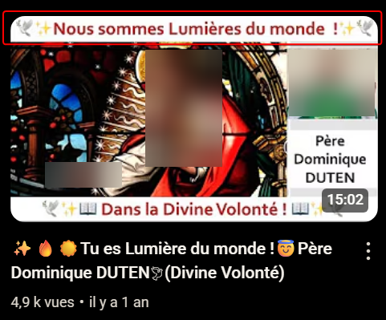Je n'ai pas écouté, dernièrement, la vidéo de cette capture d'écran. Juste à voir la vignette de la vidéo, j'aurais de quoi me demander s'il y eut immodestie. (Genre nous somme des lumières du monde). Mais enfin faudrait voir, ou plutôt entendre ce qu'il voulu dire par là.
Certains évoquèrent qu'ils seraient les Apôtres de la divine volonté. Alors qu'ils soient "Apôtres" pour des cas individuels, peut-être, je ne sais pas, je suis encore en réflexion là dessus.
Par contre, à titre collectif, selon le livre du Ciel, ne devrait-il y avoir qu'un seul qui pourra véritablement faire comprendre "la divine" volonté parmi les peuples : un Mahdi? et/ou Machia'h? et/ou grand Monarque? (ou quelqu'un qui prendra un autre nom? ou la Trinité si elle revient sur la terre (sous forme glorieuse)? comme l'avait évoqué Françoise Breynaert)
Salvador Thomassiny, à propos du livre du Ciel, un passage assez modeste, il me sembla (traduction par Dominique Duten, je dirais) (un passage plutôt modeste, mais avec au moins une déclaration exagérée, voire "fausse")
parce que ici il faut comprendre aussi quelque chose qu'on n'aime pas entendre. Dieu ne nous aime pas.Dieu ne nous aime pas. Vous comprenez Dieu aime ce qu'il a mis de lui en nous. Dieu aime ce qu'il a mis de lui en chacun de nous. Tu veux te condamner? Tu te condamnes. C'est pas que Dieu m'aime comme je suis moi. Il m'aime comme je suis bien sûr parce qu'il a l'espérance que un jour je vais dire oui. Même si c'est au moment de la mort. Mais si je dis pas oui au moment de la mort ben qu'est-ce qu'il va me dire éloigne-toi de moi maudit mais quel amour à Dieu qu'est-ce que c'est que cet amour de Dieu éloigne-toi de moi maudit. Voyez. Il faut comprendre que ce qui est important c'est lui. C'est pas nous. C'est pas nous qui sommes importants. C'est lui. On est rien. Nous sommes rien. Des Créatures. C'est tout. Le problème c'est que nous avons toujours pensé que nous sommes quelque chose d'important.
Peut-être exagéré comme manière de parler "Dieu ne nous aime pas.", je dirais, dans le sens : Dieu ne nous aime pas tout court. (J'imagine s'il n'aimait vraiment pas / plus, il leur arrêterait de leur donner à respirer, entre autres "techniques d'arrêt") Le plus équilibré, je dirais serais de dire : globalement, de base ils "aime" les Créatures, mais la plupart, faisant plus ou moins n'importe quoi, ayant déviées avec l'âge, la plupart Il ne peut plus aimer toute une partie de ce qu'elles représentent.
"Il est vrai que j’aime toutes les Créatures. Mon amour ne cesse jamais pour personne. Mais lorsque je veux accomplir quelque chose d’exceptionnel, de nouvelles œuvres, des desseins particuliers, J’ajoute à mon amour général, j'ajoute un amour spécial."
Si on ajoute le mot globalement, alors oui, je suspecte bien que globalement, Il ne peut pas aimer bien des Créatures, en l'état. Hypothèse : Beaucoup trop cassent la tête avec leur engouement pour la politique (des 10aine de millions, en france continuérent à voter), leur focalisation sur les loisirs, etc.
Fusion dans la ''divine volonté'' et chateau intérieur de Thérèse d'Avila🆕
Je me suis demandé si cet état de fusion avec la "divine volonté" correspondrait au dernier étage du
de Thérèse d'Avila. Et je vis, selon chatgpt, le dimanche 8 juin 2025, je vis que ce serait même plus loin que cet étage. À se demander si beaucoup de Gens, sur terre, actuellement seraient arrivés à cet "étage".
Chacun sa version? du livre du Ciel...🆕
Que ce soit pour le "livre du Ciel" mais peut-être pour beaucoup d'autres livres aussi, (voire tous les livres), une phrase d' Arthur Schopenhauer s'appliquerait-elle?
« On ne peut trouver dans un livre que ce que l’on y a soi-même mis. » autre formulation : « Ce que l’on lit dans un livre dépend de ce que l’on est soi-même. » source : Parerga et Paralipomena (1851), un livre d'
D'ailleurs, ce passage d' A. Schopenhauer me fit penser à Friedrich Nietzsche. Pour un même livre, il y aurait différence de compréhension, d'une âme à une autre : par exemple, pas mal de "n*zis", prirent-ils le surHumain Nietzschéen pour une sorte de surHomme hyperboréen issu de la pure lignée germanique?.. Mais pour d'autres lecteurs, et aussi selon Nietzsche, son surHumain, n'était justement pas à prendre dans le sens d'un superman. De la même manière, qu'est-ce que comprirent/comprennent certains du livre du Ciel comparé à d'autres : certain(e)s essayaieront-ils de trouver dans ce livre une sorte de moyen de s'auto prendre pour les dernières merveilles du monde?
Moi-même, ce qu'y ma semblé dans ce livre, c'est que le Fils évoquait souvent qu'il y en avait marre de la volonté Humaine. Ce que je me demande, pour certains Intervenants du livre du Ciel, c'est si eux, cet aspect que le Fils évoquait souvent en avoir marre de la volonté Humaine, je me demande si ce ras-le-bol, certains Intervenants en parleront très peu. Et s'ils se focaliseront surtout à dire : Dieu aime les Humains... Dieu nous aime... On est les dernières merveilles du monde. On est "co-Créateurs".
3 types de Gens?, 3 manières de considérer?, 3 capacités? d'impact sur les Gens pour les écrits du livre du Ciel
cas 1 "des égarés"
cas 2 relativement équilibrés
cas 3 un seul?
Des Gens qui cherchent peut-être pas forcément à mal faire et qui sont peut-être fatigués d'un monde peu spiritualisé. Mais aussi... des "orgueilleux"?
←
Qui
→
Je connais assez peu Dominique Duten, mais je me demande s'il serait plutôt dans cette catégorie. C'est-à-dire une catégorie relativement intéressante, équilibrée. Peut-être Salvador Thomassiny (lien d'une chaine youtube où il apparait) aussi, mais je vis très peu de vidéos de lui, jusqu'au vendredi 27 juin 2025
←
Qui
→
Peut-être bien un seul Le futur Mahdi? Machia'h? Grand Monarque? (ou quelqu'un d'autre qui s'appelera autrement?)
Retenir surtout des passages où le Fils évoque qu'il aime bien les Humains Manière de voir l'œuvre, une manière qui servirait surtout à se flatter, à flatter l'égo?
←
manière de comprendre le livre du Ciel
→
Essayer davantage de faire la part des choses : Bien voir aussi que souvent, dans ce livre du Ciel Le Fils évoque qu'il y en a vraiment marre de la volonté humaine, que c'est de là précisément de là que viendraient pleins de problèmes.
←
manière de comprendre le livre du Ciel
→
Faire la part des choses. Arriver à comprendre le livre du Ciel dans une Perspective de Trinitisation / monothéisme du monde
Transmission de quelques passages à quelques Gens, ou même pourraient-ils écarter de Dieu. Dégouter du livre du Ciel. Hypothèse aussi c'est que Certains utilisent ces écrits à des fins "démoniaques"?
←
à qui arriveraient-ils transmettre divers passages du livre du Ciel
→
transmission partielle à quelques milliers ou dizaines de milliers de Gens
←
à qui arriveraient-ils transmettre divers passages du livre du Ciel
→
transmission d'un autre niveau, à des millions, voire milliards de Gens aux nations, aux peuples
L' ''extériorisation de la joie de divers Intervenants sur Luisa Piccarreta / Maria Valtorta
Une impression que j'eus, c'est que divers Intervenants (que ce soit Marie Verschoote, ignis2 ou "Colombine") furent parfois assez expressifs, en particulier peut-être "Colombine", lorsqu'ils prononcèrent souvent des expressions du style "c'est formidable" la divine volonté, "c'est merveilleux". Et je me demande, si à la longue, Certain(e)s, ceci pourrait les décourager, voire les dégouter?, de voir divers Intervenant extérioriser fréquemment leurs "états d'âme", leurs "joies", quand ils se prononcent sur le livre du Ciel, ou autres œuvres Théologiques
Est-ce que le comportement de certains Intervenants, avec ''extériorisation de la joie'', est-ce que ce comportement pourrait être diminuant, pour autrui (autrui en général, ou du moins pour certain(e)s)
J'imagine parfois Quelqu'un(e) qui n'aurait pas lu Luisa Piccarreta et/ou Maria Valtorta (ou qui aurait lu juste quelques passages) et qui apprendrait que les œuvres de L.Piccarreta et M. Valtorta réunies font plus de 10000 (dix mille) pages, et que ce(tte) même Quelqu'un(e) n'aimerait pas trop lire, j'imagine que, peut-être Certains en tout cas, Certain(e)s auraient de quoi se sentir plus ou moins blasé(e)s / diminué(e)s, face à Quelqu'un(e) semblant parfois dans "l'extase" et qui dirait "c'est super/c'est formidable", la divine volonté, le livre du Ciel, Maria Valtorta, l'évangile..
Marie Verschoote me donna pas trop cette sensation qu'elle "étalait" sa joie. Enfin quand même, dans une vidéo comme "La seule solution qui peut changer et sauver le monde ! - Témoignage de Marie Verschoote" - YouTube https://www.youtube.com/watch?v=XqO-fD1-FUg , une vidéo dans laquelle elle intervint pendant environ 45 minutes, je vis, avec un programme pour faire le compte de certains mots, que j'eus le mot "magnifique" : compté 8 fois, et le mot "merveilleux" : compté 3 fois.
Ignis2 me donna davantage que Marie Verschoote, cette impression d'extérioriser "sa joie". Est-ce qu'ignis2 aurait été dans l'orgueil? Je ne suis pas sûr. Ce serait quand même aller assez loin de lui prêter de l'orgueil. Est-ce que quand ignis2/Benoît dit c'est super la divine volonté, est-ce que quand il sembla super heureux de parler de L. Piccarreta ou d'autres Catholiques, il put sembler diminuant?, pour Certains? Je dus me le demander, parfois. Je ne serais pas étonné que pour Certains, ceci passe comme une forme "d'orgueil", mais pour ma part, je ne prétend pas que ce fut de l'orgueil.
Une certaine joie extériorisée, serait aussi à mettre en lien avec l'âge de celui/celle qui parle de Théologie (ou autres sujets). Plus il/elle est jeune, plus j'aurais de quoi comprendre qu'il soit dans une extériorisation des sentiments. (Tout autant qu'un petit chat ou un petit chien me sembla, en général, plus "mouvant" qu'un chien/chat d'âge adulte. A croire que l'âge apporte une certaine "tenue" dans l'expression des sentiments.
D'ignis, de Marie Verschoote et "Colombine", la plus "extériorisante de sa "joie"", j'estime ce serait "Colombine" mais j'ai vu relativement peu de vidéo de "Colombine" et je souhaiterais pas trop juger "Colombine". Est-ce que "Colombine" serait son vrai prénom? Nom de famille? S'il se trouve que c'est un pseudo, serait-ce prétentieux? comme pseudo. Orgueilleux? Aurait-elle prit ce pseudo? en référence à la colombe? Genre je suis une colombe... "Colombine". Je ne prétends pas que "Colombine" aurait été dans l'orgueil. Est-ce que "Colombine" compris ce que serait la "divine volonté"? Comprit-t-elle divers concepts du Livre du Ciel? Je ne saurais trop. (Je rédige ceci début mai 2025). J'imagine bien qu'il ne suffirait pas que Quelqu'un(e) lise pendant des mois, voire des années, chaque semaine, un texte de Maria Valtorta et/ou Luisa Piccarreta (sachant qu'il y aurait de quoi faire, parce que ces œuvres de Maria V. et celle de L. Piccarreta feraient des milliers de pages), je me demande s'il suffirait qu'un(e) Intervenant(e) lise ceci tout en prononçant quelques vérités, pour qu'il/elle passe, pour certains, pour un "pro" mais de là à ce qu'il/elle ai forcément compris/intériorisé ce qu'aurait souhaité communiquer le Fils à Luisa Piccarreta et/ou Maria Valtorta..
L'extériorisation répétée de sa ''joie'' par rapport à des textes faisant des milliers de pages : de l'orgueil?
En fait une question qui pourrait se poser serait de savoir si "étaler sa joie" (ou enfin mettre en avant sa joie, parce que "étaler sa joie" fait peut-être péjoratif) mettre en avant fréquemment sa joie, face à des Gens qui n'ont pas lu, ou peu lu, est-ce que cette mise en avant serait de l'orgueil? : du genre : regardes, je suis un(e) pro, j'ai lu des milliers de pages, c'est super.
Est-ce que certain(e)s firent passer divers textes qui émaneraient du Fils et/ou ''la divine volonté'' pour quelque chose de ''télétubbies''?
Avertissement🆕
Je vais peut-être déplacer cette partie ''télétubbies'' dans une partie sur les Catholiques en général, plutôt que la laisser dans cette partie sur les Gens qui parlent de la divine volonté, parce que bon, il y a déjà peut-être tellement peu de Gens qui seraient dans la Théologie, en occident, que bon, ce serait peut-être "tirer sur l'ambulance", que de laisser cette partie ici. Les Gens qui parlent/s'intéressent au livre du Ciel, mériteraient beaucoup moins d'être considérés comme "télétubbies" que beaucoup d'autres prétendus Catholiques.
Considérations
Pendant un temps j'avais sélectionné comme vidéo de télétubbies, une vidéo relativement longue (plus d'une heure) et plus représentative de la série que la vidéo que je mis finalement plus haut. Mais il me sembla entendre trop de sons de pro*ts (sons de rejet de gazs intestinaux) dans diverses vidéos de teletubbies. Pas évident de trouver une vidéo "teletubbies" où il n'y avait pas trop ce genre de sons. Dans cette vidéo plus haut, je n'eus pas trop l'impression d'entendre de sons de pro*t. De ce que je vis, ce vendredi 2 mai 2025, les "
.. Un peuple, pour grande partie, malade? (Comme pas mal d'autres peuples, d'ailleurs?, mais les Anglais, davantage que d'autres?)
Est-ce que divers(es) Intervenant(e)s sur Luisa Piccarreta / la divine volonté firent passer le livre du Ciel, pour un "truc" teletubbies? (Je ne l'affirme pas. Je m'intérroge. Je rédige ceci le vendredi 2 mai 2025) Est-ce que certain(e)s confondirent se mettre dans une sorte d'extériosation de leur joie avec comprendre divers concepts de la "divine volonté". Voire confondirent ils cette extériorisation avec vivre certains concepts de la "divine volonté". Genre : j'ai ressenti ceci ou cela quand j'ai lu ceci ou cela de tel ou tel texte de Luisa Piccarreta, et puis je dis, c'est super, alors ça veut dire j'ai compris / j'ai vécu "le truc". Suffit que je fasse un "grand sourire" et/ou une mine "extatique".
Vidéos ''télétubbies''🆕
🐥 Certains Gens mimant ''télétubbies'', ou musique "télétubbies" 🐥
Certaines Gens eurent-ils le chic de choisir des musiques "télétubbies"? Par ailleurs, je connais relativement peu Thomas Fahy, je ne juge pas ce qu'il a dit. J'ignore si cette intro musicale vient de lui.
Livre du Ciel et Mahdi et/ou Machia'h et/ou grand Monarque🆕
Serait-ce possible, individuellement d'aller "dans" la divine volonté, jusqu'à une certaine "profondeur" (ou altitude) ou, en arriver à cette profondeur/altitude dépendrait d'un processus collectif? S'il se trouve qu'un degré de proximité avec la "divine volonté" dépend d'un parcours collectif, alors j'aurais de quoi penser que la plupart des Gens qui crurent individuellement être "plongés", "submergés", dans la divine volonté, ne purent tout simplement pas l'être. Peut-être, ils ont été davantage à proximité de la "divine volonté" que la moyenne des Gens, mais peut-être pas "enfouis" dans la "divine volonté", jusqu'à un certain degré. En fait, le rapprochement possible de Quelqu'un(e) avec la "divine volonté" devrait-il dépendre d'événements eschatologiques à venir?
Selon le livre du Ciel, ne devrait-il y en avoir qu'un qui arriverait à faire connaitre la "divine volonté" parmi les peuples?
Ton Jésus saura trouver sa voie pour trouver celui qui accomplira la mission de faire connaître ma Divine Volonté parmi les peuples. Extrait du Livre du Ciel – Tome 26 - Dictée qui aurait été tenue à Luisa Piccarreta par le Fils, le25 août 1929
En fait, si un jour devait survenir une croisade, avec apparition d'un Mahdi et/ou Machia'h et/ou grand Monarque (ou non), c'est peut-être à ce moment-ci où il y aurait de quoi voir qui est vraiment plutôt du côté du Fils ou non.
Je me demande aussi si véritablement une compréhension collective du livre du Ciel, voire une "immixtion" de la "divine volonté" chez les Gens, un investissement plus net des Gens par la "divine volonté", je me demande si cet investissement ne pourrait être possible qu'à partir de l'émergence d'un Mahdi et/ou Machia'h et/ou grand Monarque ou l'apparition du Fils. Ou enfin d'un événement de groupe (mondial éventuellement). En fait je me demande si les Gens qui croiraient pour le moment être rentrés, individuellement, jusqu'à un certain degré, dans la divine volonté se tromperaient sur leur degré de proximité avec la "divine volonté". Exceptés peut-être pour certaines âmes assez spéciales, mais j'imagine, ces âmes, justement, elles seraient quantitativement très rares, voire très très rares.
pour agrandir/diminuer la taille de l'image avec le scroll de la souris : -soit après avoir double cliqué sur l'image - soit shift+mousewheel ou alt+mousewheel
''Colombine''. ''Colombine'' et le livre du Ciel / Mon point de vue / questionnements🆕
D'un côté je ne saurais trop juger la Vidéaste "Colombine" puisque je vis assez peu de vidéos de sa chaine youtube, jusqu'à fin juin 2025 inclus. Mais d'un autre côté, j'aurais de quoi estimer qu'en ayant vu quelques vidéos (assez récentes, au mercredi 25 juin 2025), ou parties de vidéos que ''Colombine'' publia, ceci pourrait peut-être déjà me donner un aperçu d'ensemble, du restant de ses vidéos. (Lien de la chaine youtube de "Colombine")
''Colombine'' et sa manière de s'exprimer à J*sus🆕
Dans les quelques vidéos de "Colombine" sur le livre du Ciel que je vis, j'eus l'impression qu'au début de ces vidéos sur le livre du Ciel, "Colombine" commençait par au moins 5 minutes, mais je dirais même plutôt 10 voire 15 minutes, pendant lesquelles "Colombine" faisait des sortes de demandes au Fils/à J*sus (~environ ½ heure, pour cette vidéo). Or déjà, un tel temps de "prière", serait-ce "convenable"?
Vierge Marie et Maria Valtorta, prières et silence(s) / ''Colombine'' 🆕
Extrait d'un message qu'aurait tenu la Vierge Marie à Maria Valtorta, le 2 décembre 1943 :
"Prier ne signifie pas dire beaucoup de prières. Cela signifie aimer. Cela signifie faire parler son propre cœur. Je suis la silencieuse, nouvelle Ève.Je vous enseigne le silence.C'est par la parole que la séduction entra en Ève.C'est par mon silence que la rédemption entra dans le monde. Apprenez de moi la vertu du silence, car dans le silence extérieur le cœur parle à Dieu et Dieu au cœur. Mon silence n'était pas le silence inerte d'une âme morte. Il était au contraire une œuvre très active sur le plan spirituel".
Quelle conception aurait eu la Vierge Marie de la prière? La vidéo ci-contre éclairera peut-être davantage.
Est-ce que "Colombine" au niveau de ses demandes/appels qu'elle fit à J*sus, est-ce que "Colombine" serait concernée par ces paroles qu'aurait tenues la Vierge, en décembre 1943, concernant la prière et le silence (paroles d'un passage de la vidéo ci-contre). Pour les vidéos de "Colombine" dans lesquelles elle parle du livre du Ciel, pour ~le premier quart de la vidéo, quand elle demande "ceci cela" à J*sus, j'eus de quoi me demander, si oui, "Colombine" exagérait. Par contre pour les ~3/4 restant de ce genre de vidéo de "Colombine", comme ce n'est pas forcément de la prière, ce passage de la Vierge, la concernerait sinon pas, bien moins (mais enfin je serais pas étonné qu'assez souvent, même dans les 3 derniers quarts des vidéos de "Colombine" sur le livre du Ciel, assez souvent, dans ces 3/4 de temps, par moments elle demanda ceci ou cela au Fils).
''Colombine'' / Les phrases à l'impératif adressées au Fils🆕
En quantité🆕
Selon tchatgpt, j'eus pour les ~3 premières minutes de la vidéo de "Colombine" "La Divine Volonté nous appelle continuellement dans Ses actes afin tout nous donner! (T35,28)", j'eus 13 verbes à l'impératif : Voici un extrait (un peu modifié pour le texte, mais pas pour le compte final) voici un extrait de tchatgpt :
Voici le dénombrement des verbes à l’impératif dans les 3 premières minutes de la vidéo mentionnée. 🔍 Méthodologie : Un verbe à l’impératif est un verbe conjugué à ce mode (présent de l’impératif) et utilisé pour donner un ordre, formuler un souhait, une invitation, une prière, etc. 📌 Liste des verbes à l’impératif relevés : Prenons (v.0:01) Lis ou lisez est implicite (« pour lire » = infinitif utilisé, donc non compté). Viens (x3) (v.1:50 → « viens les ennoblir », « viens les sanctifier », « viens retirer ») Arrache (x2) (v.2:00 → « arrache ces mauvaises choses », « arrache ces mauvais comportements ») Purifie-nous (v.2:05) Recrée (v.2:07) Marque-nous (v.2:41) Marque (x2) (v.2:42 → « marque chacune… », « marque-nous… ») Investis-nous (v.2:45) Enchaîne-nous (v.3:28) Garde-nous (v.3:36) Consume-nous (v.3:37) ➡️ Total des verbes à l’impératif : 13
au moins 10 verbes à l'impératif dans les 3 premières minutes de cette vidéo
Quelque chose dont j'eus l'impression avec "Colombine", pour les quelques vidéos que j'en vis, c'est qu'elle employait souvent des verbes à l'impératif. Et cette manière de parler à l'impératif, je me demande, s'il y a un Dieu, si à "Dieu", si ceci lui aurait convenu. Au niveau du nombre de phrases à l'impératif, par exemple, pour la vidéo "La Divine Volonté nous appelle continuellement dans Ses actes afin tout nous donner! (T35,28)" (https://www.youtube.com/watch?v=NJcP25yBnRg), avec un logiciel, j'ai fait un compte des verbes à l'impératif, et j'eus, pour cette seule vidéo, 133 tournures de phrases à l'impératif (je prétends pas que le code pour compter ces verbes était "parfait" et que le compte soit bon, mais il donne déjà un ordre d'idée).
Est-ce qu'à force de demander au Fils "purifies nous", etc. Est-ce que ces demandes (voire ordres?) de "Colombine" purent être, pour le Fils, pénibles? Je ne prétend pas que les demandes ("ordres") de "Colombine" auraient eut le même effet que l'effet qu'auraient eues les attentes/demandes de Luisa Piccarreta. Juste je m'interroge si cette manière de demander à l'impératif aurait pu être pénible. Est-ce que ce serait une question de quantité, aussi? Genre demander une fois par jour, ou une fois par semaine.. Mais demander au moins 10, voire 100 fois par jour...
vers 13:24, dans la vidéo plus haut tome4, partie6, "livre du Ciel": Ma fille, tu es la cause de mon plus grand martyre. Parce que, lorsque je dois envoyer quelque châtiment, je ne peux pas me manifester à toi. C'est parce -que tu me lies de toutes parts et -que tu ne veux pas que Je fasse quoi que ce soit. D'un autre côté, quand Je ne viens pas, -tu me casses la tête avec tes plaintes, tes lamentations et tes attentes.
Si pour cette vidéo ("La Divine Volonté nous appelle continuellement dans Ses actes afin tout nous donner! (T35,28)"), si pour cette vidéo, au total, il y eut au moins 100 verbes à l'impératif et que Colombine aurait publié dans les 1600 vidéos (jusqu'à début juin 2025), alors si pour ces vidéos, en prenant pour moyenne 100 verbes à l'impératif par vidéo, je fais une estimation, ceci ferait que "Colombine" aurait prononcé, depuis quelques années, au moins des dizaines de milliers de fois des verbes à l'impératif. Des phrases du style : Jésus fait ceci, fait cela, J*sus donnes-nous ceci, donnes-nous cela (ou d'autres fois, quand ce n'était pas à J*sus qu'elle s'adressait, j'imagine elle dit des verbes à l'impératif mais pour s'adresser au public).
Personnellement, depuis pas mal d'années, que ce soit chez certain(e)s Mystiques ou chez d'autres Gens, ce type de phrases à l'impératif, ce type de phrases qui me semblèrent comme donner des ordres à Dieu, plus ou moins ces phrases durent me "chiffonner".
Y aurait-il à parler à un Dieu comme on parle à un chien.
Serait-ce plus fréquent, en général, chez les Occidentaux, de parler à Dieu comme on parle à un chien, plus fréquent que chez les Orientaux. (Il me sembla que beaucoup d'Occidentuax donnèrent de l'importance aux chiens, aux jeux de balles/ballons)
Je ne prête pas à divers Occidentaux qu'ils eurent forcément de la méchanceté, de parler ainsi.
De base, n'y eut-il pas, depuis des années, (voire des siècles) comme un truc "bizarre" à "demander" (voire "ordonner") ceci-cela à un Dieu? : genre c'est comme si on parlait "à Dieu" en lui disant : allé, fais-ceci, fais-cela, donnes moi ceci, donnes moi cela. Comme l'impression que ceux/celles qui lui "parlèrent" ainsi, comme l'impression qu'ils/elles se croyaient au supermarché 🛒 et/ou limite en face d'un chien (ou un chat), un animal de compagnie auquel ils donneraient des ordres.
Certain(e)s se croyèrent-ils avec Dieu comme au supermarché. Dans une sorte de relation essentiellement consommatrice
Comme l'impression que c'était comme si ils/elles commandaient quelque chose à Quelqu'un. N'y eut-il pas, dans cette manière de "parler" (limite "exiger") "à Dieu", n'y aurait-il pas quelque-chose qui pourrait même tenir de l'irrespect? voire de la violence. Une forme de "brutalité"? Quelque chose de poussif? Dieu, déjà, ne donnerait-il pas en permanence "des choses"? Y aurait-il besoin de le "pousser"? Pour un Dieu, vaudrait-il mieux employer certaines expressions et dire : s'il te plait, s'il te convient,s'il te plait, si je le mérite,(et encore ne vaudrait-il pas mieux le vouvoyer): daignez me donner ceci, daignez me donner cela, plutôt que de dire directement : fais ceci, fais cela, donnes nous ceci, donnes nous cela. (Je ne serais pas étonné que même certains dirent "dépéches-toi", "fais vite", donnes nous ceci). Genre : d'où tu parlerais à un "Dieu" comme au "premier venu"? C'est quoi cette manière de commander/demander?
Origine, chez "Colombine" de cette manière de s'exprimer à J*sus🆕
Cette manière de parler, vint-elle d'une origine occidentale? Certains Occidentaux/Occidentales firent-ils une sorte de transfert quand ils s'addressèrent à Dieu? Genre divers Occidentaux aimeraient qu'on leur parle comme a des chiens? (le chien m'ayant semblé l'animal fétiche de l'occident) et donc des Occidentaux parlèrent ensuite à Dieu "comme à un chien"? Croyant bien faire? Et même sans se rendre compte, que peut-être, Dieu n'était justement pas un chien.
(Après, chacun(e) fait bien ce qu'il/elle veut, dit bien ce qu'elle veut (il y aurait le principe du libre arbitre, sur cette planète), je donne juste ma sensation sur l'effet que me firent, en général, ces phrases à l'impératif.)
Parce que "Colombine" aurait eu des enfants, assez récemment. Je ne ne porte de mauvaises intentions à "Colombine" dans cette manière de s'être souvent adressée à l'impératif à J*sus. Je suspecte que sa manière de s'exprimer à l'impératif, put aussi provenir de ses Enfantements récents. J'imagine que quand on a eut récemment des Enfants, on est amener souvent à leur dire fais ceci, fais cela, amené à les diriger, ne serait-ce qu'un minimum. Alors peut-être ceci influença "Colombine", ensuite, dans sa manière de parler à J*sus, dans ses vidéos de ces dernières années (depuis 2022, au moins).
Une vidéo par rapport à la manière de demander à J*sus🆕
"Je viens quand, où, et comme Je veux. À l'heure et dans les circonstances, que, Je, veux. Je vous parle comme, Je le veux."
"Je dis bien personne, pas même un Saint, peut s'imposer à Dieu et lui dire :"viens je te l'ordonne""
S'il est vrai que Dieu peut accueillir votre désir de le sentir être un Père aimant plus que la majorité des Hommes ne le désirent, il est également vrai que personne, Je dis bien personne, pas même un Saint, peut s'imposer à Dieu et lui dire :"viens je te l'ordonne". Je viens quand, où, et comme Je veux. À l'heure et dans les circonstances, que Je veux. Je vous parle comme Je le veux.
Je ne prétends pas que "Colombine" aurait dit "je te l'ordonne". Mais à travers des milliers de phrases à l'impératif, ces phrases ne pourraient-elles tout de même donner une sensation d'ordres donnés. (En français il y aurait 7 modes verbaux. et sur ces 7, le mode de l'impérratif, est le mode pour donner des ordres (vu sur chatgpt le samedi 5 juillet 2025))
''Colombine'' : dire que l'on laisse faire Dieu et lui demander/ordonner ceci cela : comme une contradiction?🆕
N'y eut-il pas une forte contradiction dans le comportement de "Colombine" quand
d'un côté, "Colombine" dit :
d'un autre côté, "Colombine" dit
J*sus fais ce que tu veux de nous, nous te donnons notre volonté, nous te laissons les rênes
"purifies nous", "investis nous", "consumes-nous" (ou autre phrases à l'impératif)
pour agrandir/diminuer la taille de l'image avec le scroll de la souris : -soit après avoir double cliqué sur l'image - soit shift+mousewheel ou alt+mousewheel
Concernant le fait de ne pas laisser faire Dieu, ne pas lui laisser les commandes : Un épisode de ce qu'aurait vu Maria Valtorta. Un épisode avec une barque⛵. Du moins Pierre, André, Jacques et Jean auraient souhaités faire par eux-mêmes. Laissant le Fils de côté.
Un extrait de "l'évangile tel qu'il m'a été révélé.." de Maria Valtorta / Le Fils, peut-être
Voici ce que j'ai vu.
Une barque à voile, pas excessivement grande, mais pas petite. C'est une barque de pêche sur laquelle peuvent aisément se mouvoir cinq ou six personnes. Elle fend les eaux d'un lac d'une couleur bleue intense. Jésus dort à la poupe. Il est vêtu de blanc comme à l'ordinaire. Il a la tête posée sur le bras gauche et sous son bras et sa tête, il a mis son manteau gris bleu replié plusieurs fois. Il est assis, pas allongé, sur le fond de la barque, et appuie sa tête sur la tablette qui se trouve à l'extrémité de la poupe. Je ne sais pas le nom que lui donnent les marins. Il dort tranquillement. Il est fatigué. Il est tranquille. Pierre est au gouvernail. André s'occupe des voiles. Jean et deux autres, dont je ne sais qui ils sont, remettent en ordre, amarres et filets, au fond de la barque, comme s'ils avaient l'intention de se préparer à pêcher, peut-être pendant la nuit. Je dirais que le jour décline, car le soleil descend déjà à l'occident. Les Disciples ont tous remonté leurs tuniques pour être plus libres dans leurs mouvements et pour aller d'un endroit à l'autre de la barque en passant par-dessus les rames, les sièges, les paniers et les filets, sans être gênés par leurs vêtements. Ils ont tous enlevé leurs manteaux. Je vois le ciel s'obscurcir et le soleil qui se cache derrière des nuages d'orage débouchés à l'improviste de derrière la pointe d'une colline. Le vent les pousse rapidement vers le lac. Le vent, pour l'instant, est en haut, et le lac est encore tranquille. Seulement, il prend une teinte plus sombre et se plisse en surface. Ce ne sont pas encore des vagues, mais déjà l'eau commence à remuer. Pierre et André observent le ciel et le lac et se disposent à manœuvrer pour accoster. Mais le vent s'abat sur le lac et en quelques minutes tout bouillonne et écume. Les flots qui s'entrechoquent et heurtent le bateau l'élèvent, l'abaissent, le retournent en tous sens, empêchent la manœuvre du gouvernail comme le vent gêne celle de la voile qu'il faut carguer. Jésus dort, ni les pas, ni les voix excitées des Disciples, ni non plus le sifflement du vent et le choc des vagues contre les flancs du bateau et la proue ne l'éveillent. Ses cheveux flottent au vent et il reçoit quelques embruns. Mais lui dort. Jean va de la proue à la poupe et le couvre de son manteau qu'il a tiré de dessous une tablette. Il le couvre avec un délicat amour. La tempête devient de plus en plus brutale. Le lac est noir, comme si on y avait versé de l'encre, strié par l'écume des vagues. La barque engloutit de l'eau et se trouve poussée au large par le vent. Les disciples suent à la manœuvre et pour écoper l'eau que les vagues projettent. Mais cela ne sert à rien. Eux, maintenant, pataugent dans l'eau qui leur arrive à mi-jambes et la barque ne cesse de s'alourdir. Pierre perd son calme et sa patience. Il donne le gouvernail à son frère et, en titubant, va vers Jésus, qu'il secoue vigoureusement. Jésus s'éveille et lève la tête. « Sauve-nous, maître ! Nous périssons ! » Lui crie Pierre. Il lui faut crier pour se faire entendre. Jésus regarde son disciple fixement. Il regarde les autres et puis il regarde le lac. « As-tu foi que je puisse vous sauver ? » « Vite, maître ! » crie Pierre, alors qu'une vraie montagne d'eau, partant du milieu du lac, se dirige rapidement sur la pauvre barque. On dirait une trombe, tant elle est élevée et effrayante. Les disciples qui la voient venir s'agenouillent et s'agrippent, où et comme ils peuvent, persuadés que c'est la fin. Jésus se lève, debout sur la tablette de la proue. Sa figure blanche se détache sur la tempête livide. Il étend les bras vers la lame et dit au vent. « Arrête ! Et tais-toi ! » Et à l'eau, calme-toi ! Je le veux ! Alors, l'énorme vague se dissout en écume qui retombe sans dégâts. Un dernier rugissement qui s'éteint en un murmure, comme était le sifflement du vent qui se change en un soupir. Et sur le lac pacifié revient la sérénité du ciel et l'espérance et la foi dans le cœur des disciples. La majesté de Jésus, je ne puis la décrire. Il faut la voir pour la comprendre. Et je la goûte en mon intime, car elle m'est toujours présente. Et je revois comme était tranquille le sommeil de Jésus et comme était puissant son empire sur les vents et les flots.
Chapitre 46 Jésus dit ensuite Je ne te commente pas l'évangile dans le sens où tous le commentent. Je vais t'éclairer ce qui précède le passage de l'évangile. Pourquoi est-ce que je dormais ? Est-ce que par hasard je ne savais pas que la bourrasque allait arriver ? Oui, je le savais. J'étais seul à le savoir. Et alors, pourquoi est-ce que je dormais ? Les apôtres étaient des hommes. Maria, animés de bonne volonté, mais encore seulement des hommes. L'homme se croit toujours capable de tout.Quand ensuite il est réellement capable dans une chose, il est plein de suffisance et d'attachement à son savoir-faire. Pierre, André, Jacques et Jean étaient de bons pêcheurs et pour ce motif, ils se croyaient insurpassables dans la manœuvre des bateaux. Moi, pour eux, j'étais un grand rabis, mais une nullité comme marin. C'est pourquoi ils me jugeaient incapables de les aider, et quand ils montaient dans la barque pour traverser la mer de Galilée, ils me priaient de rester assis parce que j'étais incapable d'autre chose. Leur affection aussi y était pour quelque chose, et ils ne voulaient pas m'imposer des fatigues matérielles. Mais l'attachement à leur savoir-faire dépassait encore l'affection. Je ne m'impose que dans des cas exceptionnels, Maria. Généralement, je vous laisse libre, et j'attends. Ce jour-là, j'étais fatigué, et on me priait de me reposer, c'est-à-dire de les laisser faire, eux qui étaient si capables. Alors, je me mis à dormir. Dans mon sommeil se mêlait aussi cette constatation de ce que l'homme est homme, et qu'il veut agir par lui-même, sans se rendre compte que Dieu ne demande qu'à l'aider. En ces sourds spirituels, en ces aveugles spirituels, je voyais tous les sourds et les aveugles spirituels qui, pendant des siècles et des siècles, iraient à leurs ruines pour vouloir agir par eux-mêmes, alors que je suis penché sur leurs besoins en attendant qu'ils m'appellent à l'aide. Quand Pierre cria « Sauve-nous ! » mon amertume tomba comme un caillou qu'on laisse aller. Je ne suis pas homme, je suis le Dieu homme. Je n'agis pas comme vous agissez. Vous, quand quelqu'un a repoussé votre conseil ou votre aide, et que vous le voyez dans l'embarras, même si vous n'êtes pas assez méchant pour vous en réjouir, vous l'êtes assez pour rester dédaigneux, indifférents à le regarder, sans vous émouvoir de son appel à l'aide. Par votre attitude, vous lui faites comprendre. Quand j'ai voulu t'aider, tu n'as pas voulu. Maintenant, débrouille-toi. Mais moi, je suis Jésus. Je suis le Sauveur. Et je sauve Maria. Je sauve toujours, dès qu'on m'appelle. Les pauvres hommes pourraient objecter. Et alors, pourquoi permets-tu aux tempêtes isolées ou généralisées de se former ? Si par ma puissance, je détruisais le mal, quel qu'il soit, vous arriveriez à vous croire les auteurs du bien, qui en réalité seraient un don de ma part, et vous ne vous souviendriez plus jamais de moi. Jamais plus. Vous avez besoin, pauvre fils, de la douleur, pour vous rappeler que vous avez un père, comme le fils prodigue qui se rappela qu'il avait un père quand il eut faim. Les malheurs servent à vous persuader de votre néant, de votre déraison, cause de tant d'erreurs, et de votre méchanceté, cause de tant de deuils et de douleurs, de vos fautes, cause de punition que vous vous donnez à vous-mêmes, et de mon existence, de ma puissance, de ma bonté. Voilà ce que vous dit l'évangile d'aujourd'hui, votre évangile de l'heure présente, pauvres fils. Appelez-moi. Jésus ne dort que parce qu'il est angoissé de vous voir sans amour pour lui. Appelez-moi, et je viendrai.
⚠️ Attention, pour le passage : "je suis penché sur leurs besoins en attendant qu'ils m'appellent à l'aide" ou le passage "Je sauve toujours, dès qu'on m'appelle." ou le passage "Appelez-moi. Jésus ne dort que parce qu'il est angoissé de vous voir sans amour pour lui. Appelez-moi, et je viendrai.", ce n'est pas parce que j'ai cité ces passages, que je souhaiterais inciter divers Gens à "appeler" "J*sus" d'une certaine manière. Du genre, ce n'est pas que j'aurais souhaité qu'ils fassent plein de "prières" envers "J*sus" : Il y aurait "prière" et "prière" : Il y aurait "appeler" et "appeler" : différentes manières de "prier/d'appeler" : la "prière" extérieure, expressive et la "prière" intérieure.
Est-ce bien laisser faire "J*sus" à sa manière que de lui dire "fais ceci"/ fais cela". N'est-ce pas plutôt — évidemment — comme lui donner des ordres? En quoi serait-ce compatible d'ordonner quelque chose à Quelqu'un (et même peut-être bien plus que simplement Quelqu'un : Dieu) et le laisser faire tout à fait à sa manière.
Étrange situation, il me sembla. Pour faire une analogie, je me suis dit que cette ambiance avec "Colombine" ressemblerait à l'ambiance où Quelqu'un, sur un bateau, dirait à celui/celle qui tiendrait le gouvernail :
Comme une forte contradiction ?
d'un côté il/elle dirait
mais d'un autre côté, il/elle lui dirait
vas-y fais comme tu veux, mènes le bateau où tu veux, tu es à la manœuvre⛵
va à droite, va plus vite, amène le bateau par ici, va à gauche, ralentit🎠
En fait, il y aurait de quoi se demander : qu'est-ce que tu "veux?" : laisser faire celui/celle qui tient la barre, ou tu veux le "télé"guider? Qu'est-ce que tu veux?
''Colombine'' et sa compréhension, ou non? compréhension, de ce que serait être dans la ''divine volonté''🆕
''Colombine'' / Une confusion entre joie de la maternité et submersion/complet plongeon dans la ''divine volonté''?🆕
Ce qu'aurait dit la V. Marie à Maria Valtorta
"Il n'y a pas de joie plus grande après celle d'aimer le Seigneur que d'être mère d'un Enfant à soi et de dire : je t'ai formé, je t'ai portée et nourri."
D'après ce qu'aurait évoqué la V. Marie à Maria Valtorta, "Il n'y a pas de joie plus grande après celle d'aimer le Seigneur que d'être mère d'un Enfant à soi" et"Colombine" eut 5 Enfants, au cours des dernières années selon ce que je vis sur au moins une des vidéos, (j'imagine les siens). Est-ce que cette maternité, est-ce qu' avoir des Enfants donna à "Colombine" la sensation d'être entrée dans la "divine volonté"? Est-ce que "Colombine" confondit — cette joie de l'enfantement évoquée par la V. Marie — avec une "immersion" dans la divine volonté.. (Parfois "Colombine" dit "Nous fusionnons nos volontés dans la tienne.","nous nous immergeons en toi, dans ta divine volonté")
Plongeons, 💦 immersions 🤿 dans la ''divine volonté''..🆕
Un extrait vidéo qui pourrait s'appliquer à "Colombine"? ou non?
Quand Certain(e)s dirent nous nous fusionnons, "nous nous immergeons en Toi" dans ta "divine volonté", se "fusionnèrent"-ils vraiment? Se "submergèrent"-ils dans la divine volonté.
"Jésus nous nous immergeons en Toooi dans ta divine volonté, nous nous unissons à Toi"
quelques secondes extraites de la vidéo de "Colombine" : "L'âme qui vit dans la Divine Volonté est porteuse d'un amour nouveau, conquérant et opérant (T36,20)", vers 14:00 lien : https://youtu.be/AKXXTTlkeoQ?t=14
Qui serait ce nous? "Colombine" + ses Enfants? + qui d'autre? Plein de Gens sont en train de s'immerger?
Y eut-il con(comme)-fusion et/ou confusion?
''Colombine'' / Une confusion? entre sorties de corps d'une âme qui aurait été exceptionnelle (L. Piccarreta) et ''fusion'' de ''Colombine'' avec la ''divine volonté''🆕
"Colombine" prit-elle pour acquit la "fusion" de sa "volonté" avec la "divine volonté"? En fait, des âmes telles que celle de Luisa Piccarreta il y en aurait eu très peu, voire pas, j'estime, depuis le milieu du XXème siècle, depuis Luisa Piccarreta. Si j'ai compris quelque chose au livre du Ciel, Luisa Piccarreta faisait des sortes de "sorties de corps". A chaque fois? Au moins des centaines de fois, elle aurait été en sortie de corps.
5 extraits du livre du Ciel par rapport aux sorties de corps de Luisa Piccarreta. Sachant que j'eusau moins 200 résultats avec recherche de l'expression "hors de mon corps", sur l'ensemble des 36 tomes du livre du Ciel
Tome 1: Un matin, alors que je ressentais d'une manière plus aiguë que d'habitude le désir de toujours souffrir davantage, mon très aimable Jésus vint. Il m'attira hors de mon corps et transporta mon âme vers un homme qui, à l'aide d'un fusil, venait d'être attaqué
Tome 2: Le soir venu, mon doux Jésus m'est apparu et m'a presque fait des reproches à cause de mon refus. Puis il a fait passer en moi deux rayons très lumineux. - Tome 2 - Par le premier, j'ai compris intellectuellement que la Foi est Dieu et que Dieu est la Foi. C'est ainsi que, ci-dessus, j'ai pu essayer de dire quelque chose sur la Foi. Maintenant, à la suite du deuxième rayon, je vais tenter d'expliquer comment je perçois Dieu. Quand je suis hors de mon corpset me trouve dans les hauteurs des Cieux, j'ai l'impression de voir Dieu comme à l'intérieur d'une lumière.
Tome 2: 20 mars 1899 - Si le monde est dans un état si triste, c'est parce qu'il n'obéit pas à ses chefs, dont Dieu est le premier. Ce matin, Jésus m'a transportée hors de mon corps et m'a montré plusieurs personnes se disputant.
7 avril 1899: [...] En un instant, je me trouvai hors de mon corps en sa compagnie.
21 avril 1899 : [...] Il me fit perdre conscience et m'attira hors de mon corps.
Est-ce que quand "Colombine" dit "nousnous fusionnons" avec la divine volonté (d'ailleurs qui inclurait ce "nous"?), quand "Colombine" dit "nous nous fusionnons" avec la divine volonté, est-ce que cette "fusion" correspondit à ce qu'aurait fait Luisa Piccarreta? Luisa Piccarreta qui aurait été alitée pendant des décennies..
Relation de Luisa Piccarreta avec la divine volonté : du moins en partie, des sorties de corps (pas mal de fois il y aurait eu sortie de corps). Pour le moment (mardi 10 juin 2025), je ne suis pas sûr si à chaque fois c'était des sorties de corps (il faudrait que "j'explore" davantage le livre du Ciel)
? = la même? "chose" que
la "fusion", la "submersion" de "Colombine" avec la "divine volonté"
?
Est-ce que
"Colombine" aussi aurait fait des "sorties de corps"?
"Colombine" aurait fait elle-même des "sorties" de corps? Serait-elle, ou fut-elle pendant des années ou même simplement quelques semaines d'affilées, dans des conditions d'existence semblables à celles de
(c'est-à-dire alitée quasi continuellement, en mangeant quasiment rien). Suffit-il d'être assis(e) sur une chaise, de faire des mouvements et des sourires pour être "fusionnés" / "immergés" 💧💦 dans la "divine volonté"?
''Colombine'', véritable explicatrice ayant compris le Livre du Ciel, ou avant tout, surtout, un caractère🆕
''Colombine'' / la statue de J*sus à sa droite🆕
Sur certaines vidéos de "Colombine"
pour agrandir/diminuer la taille de l'image avec le scroll de la souris : -soit après avoir double cliqué sur l'image - soit shift+mousewheel ou alt+mousewheel
(et pas une seule, sur au moins 100 vidéos de sa chaine (J'ai pas compté toutes 😐)), je vis que "Colombine" avait une statue J*sus à sa droite, à côté d'elle. Cette statue représente le Fils avec une main levée comme s'il était en train de prêcher certaines paroles. Est-ce que cette statue ferait style : "Je vous parle, c'est comme si c'était J*sus qui vous parle." Genre c'est J*sus qui vous parle. Genre je suis en train de vous prêcher la bonne parole parce qu'à côté de moi, vous voyez, y a une statue de Jé*us. Écoutez c'est J*sus qui est en train de vous parler.
Je ne prête pas à "Colombine" l'intention de se prendre pour Dieu, je ne sais pas si elle eut cette intention ou non.
''Colombine'' dans la compréhension du livre du Ciel, ou, plutôt/surtout, Occidentale, récipient/reflet de la volonté Humaine?🆕
En fait, "Colombine" fut-elle grande explicatrice / Théologienne du livre livre du Ciel, fut-elle elle même dans la "divine volonté" ("submergée"..) ou "Colombine" fut-elle plutôt un reflet pour se rendre compte de ce que peut signifier – une partie du moins – de la volonté Humaine (la volonté Humaine plutôt occidentale, je dirais, pour "Colombine").
"Colombine" fut-elle vraiment perspicace dans sa compréhension du livre du Ciel, ou avant tout, fut-elle un caractère? Est-ce que son approche du livre du Ciel est vraiment une compréhension pertinente de divers passages du livre du Ciel, ou y aurait-il eut, partiellement, méprise, par moments? (Quand par exemple elle évoque se submerger dans la "divine volonté".)
"Colombine"
"Colombine"
Fille très perspicace? Capable d'expliquer, sur des heures et des heures, depuis des années, (dans plus de 1500 vidéos), le livre du Ciel
ceci? ←
ou
plutôt ceci? →
Surtout un caractère, une Fille très sûre d'elle-même Archétype? Occidentale : pas forcément méchante, mais pas forcément non-gaffeuse non plus? Capable de sortir des déclarations — fausses? — en toute conviction : genre qu'elle se plonge complétement dans la "divine volonté" (ou que "nous" nous y plongeons (qui serait inclus dans ce "nous")?)
un mélange des deux?
''Colombine'' / Bilan provisoire / À priori / questionnements 🆕
Comportementalement, "Colombine" fut-elle plutôt une Fille plongée "complétement" dans la "divine volonté" (comme elle le dit, bien plus d'une fois, depuis des années, qu'elle se plongeait "complétement" (ou que nous nous plongions complétement)), fut-elle ainsi véritablement plongée complétement dans la "divine volonté", ou fut-elle avant tout "un caractère". Depuis le début de la rédaction de cette partie sur "Colombine", pour avoir avoir écouté davantage certains passages vidéos de "Colombine" je me demande en fait si avant même qu'elle se plongea véritablement "complétement" dans la "divine volonté", "Colombine" fut plutôt un récipient de la volonté humaine et un reflet de la volonté Humaine. Un récipient qui depuis des années extériorise souvent ce que peut représenter la volonté Humaine. Est-ce que "Colombine" servirait plutôt comme Archétype de ce que représenterait la volonté Humaine, ou plutôt serait-elle tout à fait plongée "complétement" dans la "divine volonté"? Par ses manières de fréquemment donner des ordres (ou enfin faire des demandes), ces comportements me semblèrent plutôt refléter la volonté Humaine. C'est l'à priori/sensation, que j'ai, pour le moment.
Je conçois que par moments, elle ait fait des déclarations vraies, sur le livre du Ciel. Sur des milliers de pages de cette œuvre, j'imagine bien qu'elle ait dit des déclarations assez simples, vraies. Mais se poserait quand même la question de savoir si elle a mélangé des déclarations vraies avec des affirmations qui serait, pour le mois, "à revoir" : du genre qu'elle se plongeait complétement dans la divine volonté. Une question serait de savoir si non seulement il y eut des déclarations, pour le moins "hasardeuses" et puis j'aurais de quoi estimer à partir de quelques vidéos, que sur des centaines de vidéos, pendant qu'elle parla du livre du Ciel, souvent elle donna de temps en temps des "ordres" au Fils. Donc même si elle fit des déclarations vraies à propos de certains passages du livre du Ciel, extériorisa-t-elle aussi assez souvent de la volonté Humaine : du genre elle va lire tel ou tel passage, puis elle va dire Viens J*sus, fais ceci, fais cela.
Parfois, elle me fit, au moins un peu, "songer" à M. Onfray. Archétype occidental qui fait avec avec conviction des déclarations. Des déclarations sur des sujets spirituels / intellectuels.
J'imagine parfois, certaines Filles, tout en douceur, tout en finesse, elle suggéreraient à un Garçon, d'agir. Je me demande, avec "Colombine", si depuis des années, il y aurait eut quelques chose de "poussif". (Même envers le Fils). Comme l'impression qu'il eut parfois plutôt un "poussage" qu'une suggestion "tout en douceur".
Mais enfin ceci représenterait un "poussage", ceci dépend pour qui, je suspecte. Je me demande si pour des Orientaux (plutôt félin, dans la finesse (je dirais pour le chat/les félins en général, la finesse est naturellement incarnée, mais les félins/Orientaux ne seraient pas trop obéissants, plutôt sauvages)), je me demande si en général, pour des Orientaux, Colombine semblerait plutôt poussive, mais pour des Occidentaux (plutôt "chiens", plutôt orientés obeïssance (ordre/commandes) (peut-être pas tellement naturellement "gracieux comme les félins, mais par conte plus travailleurs)), peut-être "Colombine" semblerait-elle davantage ok, non poussive.
Colombine impact chez des Occidentaux comparé à impact chez des Orientaux
Pour des Occidentaux
Pour des Orientaux
Moins "fins" / moins naturellement "gracieux" Mais plus obéissants / plus travailleurs / Moins sauvages / moins sanguins
Plus fins / gracieux Mais moins obéissants, plus sauvages, plus sanguins
Même si "Colombine" donna des "ordres" souvent, ou du moins souvent dit des phrases à l'impératif ("Prenons un moment tous ensemble aujourd'hui pour continuer à lire et méditer le volume .. " / J*sus donnes nous, J*sus viens), pour un Occidental, j'imagine, il aimerait plutôt bien, ou du moins, n'y verrait pas trop d'inconvénient
Pour un Oriental, cette manière qu'eus "Colombine" de donner fréquemment des ordres, pour un Oriental, ces manières lui sembleraient/seraient pénibles?
Pas mal d'Occidentaux, j'estime étant plutôt de mentalité "chien"
Pas mal d'Orientaux me sembleraient plutôt de mentalité "félin"
"Colombine", j'imagine, pourrait, pour des Occidentaux, leur être assez adaptée (Enfin pour ceux étant dans la Théologie, c'est-à-dire peut-être pas "grand monde")
Peut sembler relativement adapté, pour un Occidental mental
pour un Oriental mental, je suspecte "Colombine" semblerait manquer de finesse, semblerait caricaturale
Ce à quoi croiront plutôt une partie des Orientaux (ceux qui n'iront pas vers l'antiChrist) : une véritable colombe : Un futur Mahdi? ou le Fils directement?
Pour un Occidental : pourrait faire l'illusion d'une colombe
Pour un Oriental mental, "Colombine" ne pourrait pas vraiment faire l'illusion d'une colombe
Son pseudo "Colombine", un occidental mental ne prendrait pas forcément ceci pour de l'immodestie
Des Orientaux pourraient prendre le pseudo "colombine" pour de l'immodestie?, une faute de goût?
Les demandes / "aboiements" de "Colombine" dérangeraient pas forcément un Occidental mental, qui en général aime bien les chiens
Pour un oriental mental peut-être les aboiements / demandes, lui seraient davantage pénibles qu'à un Occidental.
Problématique des Occidentaux : demanderaient en aboyant, trop poussivement, gauchement.
Problématique des Orientaux : demanderaient, mais pas tout à fait au bon Dieu?
L'impression d'une Archétype occidentale. À se demander si beaucoup d'Occidentaux auraient comme besoin d'être commandés. Et si dans beaucoup de comportements, "Colombine" exprima cette orientation occidentale. Est-ce que comment "Colombine" commanda souvent ceci /cela à J*sus, est-ce que ces commandes/demandes seraient un reflet de la psyche occidentale. Comme s'ils parlaient au Fils comme ils souhaiteraient qu'eux leur parle. Mais ceci ne pourrait-il poser problème? Car le Fils serait le Fils. Et il n'y aurait pas à s'adresser au Fils, comme le Fils s'adresserait à des Occidentaux ou des Orientaux. Est-ce que le Fils souhaiterait qu'on lui ordonne/commande ceci cela : d'après certains extraits du livre du Ciel, j'eus pour le moins de quoi en douter, et même y aurait de quoi penser, que parfois, venant de Luisa Piccarreta, ses demandes lui auraient été pénible. Y aurait diverses manières de "demander" : la Vierge Marie l'aurait évoqué à Maria Valtorta : "Prier ne signifie pas dire beaucoup de prières. Cela signifie aimer. Cela signifie faire parler son propre cœur. Je suis la silencieuse, nouvelle Ève.Je vous enseigne le silence.C'est par la parole que la séduction entra en Ève.C'est par mon silence que la rédemption entra dans le monde."
pour agrandir/diminuer la taille de l'image avec le scroll de la souris : -soit après avoir double cliqué sur l'image - soit shift+mousewheel ou alt+mousewheel
Monsignor Volpi, seguendo gl’insegnamenti di San Paolo della Croce, per eludere gl’inganni del demonio davanti alle apparizioni, disse a Gemma: Disprezza le apparizioni. Io te lo comando. Quando senti o vedi immagini di Gesù o di Maria, manda uno sputo contro di loro, intendendo disprezzare il demonio che ti vuole ingannare. A questi atti di disprezzo compiuti da Gemma per ubbidienza non si offendevano né Gesù, né la Madonna e né gli Angeli ed i Santi che le apparivano, che anzi le davano segni di gradimento. Un giorno le apparve l’Angelo Custode e la Santa gli diede uno sputo, cercando di respingerlo. L’Angelo non si allontanò, anzi dove cadde lo sputo ai piedi dell’Angelo, apparve una rosa bianca, sulle cui foglie stava scritto a lettere d’oro: «Dall’amore tutto si riceve». Dice la Santa: Povero Gesù! Alcune volte gli ho sputato in faccia e Lui stava buono buono, mi guardava, sorrideva e mi accarezzava.
Monseigneur Volpi, suivant les enseignements de saint Paul de la Croix, pour déjouer les tromperies du diable devant les apparitions, dit à Gemma : Méprise les apparitions. Je te commande. Lorsque vous entendez ou voyez des images de Jésus ou de Marie, crachez-leur dessus, dans l'intention de mépriser le diable qui veut vous tromper. A ces actes de mépris accomplis par Gemma par obéissance, ni Jésus, ni Notre-Dame, ni les anges et les saints qui lui sont apparus, qui lui ont en effet donné des signes d'approbation, n'ont été offensés. Un jour, l'Ange Gardien lui apparut et le Saint lui donna un crachat, essayant de le repousser. L'Ange ne s'éloigna pas, au contraire, là où la broche tomba aux pieds de l'Ange, apparut une rose blanche, sur les feuilles de laquelle était écrit en lettres d'or : « De l'amour on reçoit tout ». La Sainte dit : Pauvre Jésus ! Parfois je lui crachais au visage et il était bon, me regardait, souriait et me caressait.
Attention, entre ce que dit l'ange dans le texte d'origine et ce que dit Anne Bernet. L'ange n'aurait pas dit"ne t'inquiète pas".
Françoise Breynaert
J'ai déjà vu plusieurs pages du site https://www.foi-vivifiante.fr et écouté diverses vidéos de ce site. Je dirais qu'il me sembla présenté sur ce site une des perceptions les plus justes qui soit. Si ce ne fut sur certains points:
La "conviction" de Françoise Breynaert qu'il y aurait un bel avenir.
Sa conception du système scolaire et du système professionnel.
Françoise Breynaert me sembla assez convaincue que le retour glorieux du Fils se ferait sans présence physique.
Par ailleurs, elle me sembla assez convaincue sur la notion d'âme sœur.
Françoise Breynaert - L'école et les systèmes professionnels
"Vous pouvez faire des études d'architecte, de tout ce que vous voulez. Y a un bel avenir"
"Il faut dire aux jeunes attention vous avez un bel avenir".
Pourquoi faudrait-il dire aux jeunes qu'ils ont un bel avenir. Encore faudrait-il que ce soit vrai, non? (M'enfin Françoise Breynaert aurait-elle entendu auparavant parler Quelqu'un comme ceci? et aurait-elle été "influencée"🤔? (Et si tant est que Françoise Breynaert fut influencée pour ces paroles, reprit-elle correctement les paroles qu'elle aurait entendu?))
Ceci serait-il vrai que les "Jeunes" auront un bel avenir. Eh bien, je dirais, ils auraient un"bel avenir", mais sous condition(s), peut-être, non, tout de même? Et puis un "bel avenir", - peut-être pas tout de suite et - peut-être pas pour tout le monde Encore faudrait-il que cette planète ne sembla pas sous possession démoniaque généralisée, pour qu'il puisse y avoir un bel avenir. Je ne saurais trop s'il exista et existe encore un purgatoire et/ou un enfer, mais le système scolaire et diverses situations dans le système professionnel occidental "adulte" risquent peut-être d'aggraver le risque de vous y amener.
Je dirais on peut être aussi parfois en université sous aura "démoniaque" et avoir un avenir pourri si on stagne dans ces universités. Pour Françoise Breynaert, probablement, de son temps, l'école n'était pas encore mixte en genre?
À se demander si elle, ou d'autres de son âge ou environ, se seraient rendu compte de ce que serait devenu ce système scolaire. Françoise Breynaert aurait-elle été plutôt sur un petit nuage en croyant qu'il suffirait "d'aller à l'école", et d'avoir des bonnes notes à l'école et que tout irait forcément bien?
J'eus comme un doute que Françoise Breynaert et beaucoup de Créatures de sa génération, se rendirent compte de la gravité que représentait le système scolaire occidental actuel et, en général, les systèmes professionnels occidentaux actuels.
Par moment, elle déclara que l'on pouvait devenir architecte et réussir sa vie et je ne suis plus tout à fait sûr (il faudrait que je retrouve les vidéos) mais dans d'autres vidéos, je crois me souvenir qu'aussi elle parla du parcours scolaire comme quelque chose de bien et qu'elle déclara ceci sans émettre de consignes de sécurité.
Par rapport à Françoise Breynaert, j'ajouterais tout de même, qu'à travers ce système scolaire occidental mixte actuel, on peut aussi la rater, son existence. Personnellement, si un Garçon ou une Fille avait les moyens d'éviter ce système scolaire, je lui conseillerais plutôt de rester tranquille, en relative sécurité, à domicile, et que si il(ou elle) a envie d'étudier l'architecture ou autre, il est évident qu'il (ou elle) peut aussi le faire tranquillement à domicile (en consultant à domicile des données sur l'architecture, ou par exemple en regardant des reportages, des documentaires). De plus, en l'état actuel du monde, avant d'orienter une Créature vers des métiers du monde, je l'orienterais vers la Théologie et/ou vers les couvents ou les monastères, ou à domicile. ⚠️ Professionnellement, ce n'est peut-être pas la peine d'aller en première intention, vers des milieux professionnels eux-mêmes situés pour beaucoup dans une société moderne globalement agnostique, mixte, dangereuse pour la libido, démoniaque, plutôt que de rester dans des milieux relativement protégés.
(Luisa Piccarreta, alitée pendant des décennies, et autres grandes figures du catholicisme, auraient ainsi été mises à l'écart des "affaires du monde", par le Christ.)
Françoise Breynaert - Le retour glorieux du Christ
D'après Françoise Breynaert, il me sembla que ce devait être virtuel. L'abbé Veyron, dans un schéma d'une de ses vidéos, ne me sembla pas du même avis. Un passage de Maria Valtorta me sembla aller dans le sens que ce ne pourrait être que "virtuel", pour le Fils.
Dieu ne devrait pas revenir une deuxième fois en "chair et en os"? Un extrait de Maria Valtorta, du 7 janvier 1944
Cet extrait en langue italienne :
Traduction de cet extrait :
Nel mio vero, unico Vangelo, è detto:[13] “Io sono il Dio di Abramo, il Dio di Isacco, il Dio di Giacobbe. Non il Dio dei morti ma dei vivi”. Abramo è vissuto una volta. Isacco è vissuto una volta. Giacobbe è vissuto una volta. Tu vivrai una volta. Io che sono Dio ho preso carne una volta e non la prenderò una seconda, perché anche Dio rispetta l’ordine. E l’ordine della vita umana è questo: Che ad una carne si fonda uno spirito per rendere l’uomo simile a Dio, il quale non è carne ma spirito, non è animale ma soprannaturale. Che quando la carne tramonta, alla sua sera, cada come spoglia e rivestimento nel nulla da cui fu tratta e lo spirito torni alla vita sua: beata se visse, dannata se perì per avere fatto della carne il suo signore invece di fare Dio signore del suo spirito. http://www.valtortamaria.com/operaminore/quaderno/2/manoscritto/5/7-gennaio-1944 7 gennaio 1944. 7 janvier 1944 Dictée à Maria Valtorta
Il est dit, dans mon seul et vrai Évangile: "Je suis le Dieu d’Abraham, le Dieu d’Isaac et le Dieu de Jacob. Non pas le Dieu des morts, mais des vivants [1]." Abraham a vécu une fois. Isaac a vécu une fois. Jacob a vécu une fois. Tu vivras une fois. Moi, qui suis Dieu, j’ai pris chair une seule fois et ne la prendrai pas une seconde, parce que Dieu lui-même respecte l’ordre. Or l’ordre de la vie humaine est le suivant : Un esprit fusionne avec une chair pour rendre l’homme semblable à Dieu, qui n’est pas chair mais esprit, non pas animal mais surnaturel. Quand la chair dépérit lorsque vient son crépuscule, elle tombe comme une dépouille, telle un simple revêtement, dans le néant dont elle fut tirée, et l’âme retourne à sa vie : bienheureuse si elle vit, mais damnée si l’homme a fait de sa chair son seigneur au lieu de faire de Dieu le seigneur de son âme. 7 janvier 1944 Dictée à Maria Valtorta
Autres extraits de Maria Valtorta qui iraient dans le sens que le Fils n'aurait pas même chair que lors de la première venue, lors de son retour
Je viendrai, avec ma Chair glorifiée, rassembler les créatures pour la dernière bataille contre l’Ennemi; je jugerai, splendidement revêtu de ma Chair glorifiée, les corps revenus à la vie pour le jugement; je retournerai pour toujours au Ciel après avoir condamné à la mort éternelle les chairs qui ne voulurent pas devenir des esprits; et je vous reviendrai, Roi éclatant d’un peuple éclatant en qui l’œuvre du Père, du Fils, de l’Esprit sera glorifiée par la création du corps humain parfait, tel que le Père l’avait créé en Adam, beau d’une indescriptible beauté, grâce à la rédemption de la semence d’Adam par l’œuvre du Fils et la sanctification opérée par l’Esprit."
Un retour du Fils qui serait simplement virtuel?
1. "Attention, c'est une venue glorieuse, il ne va pas revenir corporellement". Pas corporellement? En quoi l'adjectif "glorieuse" s'opposerait à présence physique matérielle? Serait-ce un à priori infondé? Je n'ai pas encore parcouru tout le site de Françoise Breynaert, alors peut-être donna-t-elle des sources quelque part, je ne préjuge pas pour l'instant que ce ne fut pas le cas. Update du mardi 26 novembre 2024 : s'il se trouve qu'un des passages de Maria Valtorta (du 7 janvier 1944) est authentique, vrai : alors oui, pour le Fils, ce ne pourrait être un retour que "virtuel", pas dans un corps physique, en tout cas.
2."Il serait vulnérable". Vulnérable? N'aurait-il, du moins, des Anges, pour le protéger?
3."Il ne va pas exercer de pouvoir par une contrainte physique." ? Et s'il y a des tremblements de terre, des épidémies, ceci est bien physique tout de même non? Si Il fait venir des anges qui s'occupent des Créatures. De plus, si c'est Lui qui régit le monde, le climat... Je dirais plutôt : Il ne devrait pas laisser les hommesexercer de contrainte physique, la volonté Humaine, exercer de contrainte physique. (Mais les anges, je suspecte (je ne sais pas non plus) Il devrait les laisser faire, et laisser faire les hommes s'ils sont avec divine volonté. (Peut-être parce qu'ainsi, s'ils laissent faire les hommes sous condition qu'ils soient dans la divine volonté, ce serait comme s'il se laissait faire lui-même?)).
Par rapport aux Judaïsants et aux Musulmanisans, (quoique je suis moins sûr pour les Musulmanisans) les Christianisants, auraient été les seuls à concevoir que Dieu se fit homme, mais pourquoi certains d'entre eux auraient-ils la conviction que lors de son éventuelle deuxième venue aussi, il ne pourrait aussi se faire homme (même, peut-être ne serait-ce que par intermittence)? Certains Musulmanisans, avec leur foi pour le Mahdi et certains Judaïsants, avec leur foi pour le Machia'h, ne purent-ils sembler plus terre-à-terre? (Par rapport à certains Christianisants)
Pour ma part, je n'aurais pas de conviction comme Françoise Breynaert sur ces 3 points : un retour non corporel, une vulnérabilité si c'était un retour corporel, aucune contrainte physique. Pour le moment, je n'écarte pas qu'il ne revienne pas corporellement, mais je n'écarte pas l'inverse non plus. Mais pourquoi me sembla-t-elle avoir des convictions sur ces trois points? Je vis qu'elle se basa, du moins, sur un passage de Daniel. (De mémoire, je crois elle en parla dans une vidéo ultérieure à cette vidéo dans laquelle elle évoquait que le retour ne serait pas physique.) Daniel 7:13?
Je regardai pendant mes visions nocturnes, et voici, sur les nuées des cieux arriva Quelqu'un de semblable à un fils de l'homme; il s'avança vers l'ancien des jours, et on le fit approcher de lui.
En quoi ce verset impliquerait un retour virtuel? Je n'ai pas compris, pour l'instant. (Comme précédemment évoqué, je n'ai pas encore parcouru, au mardi 26 novembre 2024, tout le site foi-vivifiante, alors peut-être dans le futur trouverais-je des sources qui iraient dans le sens que venue glorieuse = forcément pas de présence physique).
Retour glorieux du Fils/Christ. Françoise Breynaert en contradiction avec l'abbé Veyron?
Capture d'écran d'une vidéo de la chaîne bible et savoir, de l'abbé Veyron. J'y ai rajouté une ellipse rouge clignotante. https://www.youtube.com/watch?v=o623dW9aA5o Dans la capture d'écran ci-contre, depuis la chaîne bible et savoir, il y aurait présence physique.
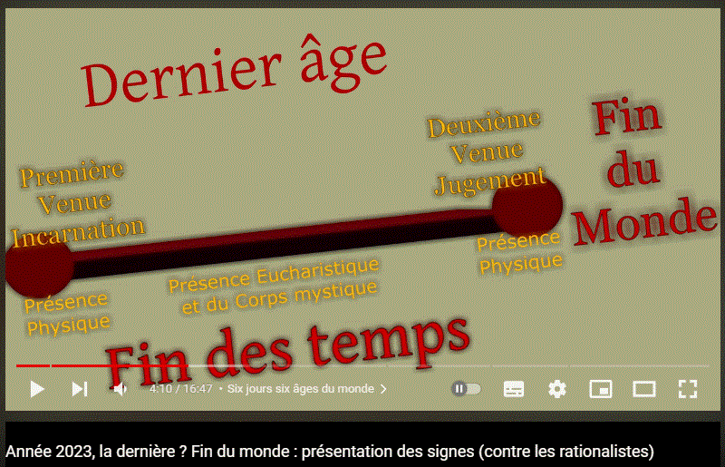
Un passage de Maria Valtorta qui me sembla aller dans le sens que le Fils ne reprendra pas corps
Il n'y aurait pas de réincarnation, et pas 2 corps. D'après le passage suivant, de Maria Valtorta, Le Fils ne devrait pas reprendre corps. De quoi, pour le moins, suspecter que le Fils ne peut pas être aussi le Mahdi, le Machia'h ou le grand Monarque.
Jésus dit : "Voici ce qui est dicté pour toi, ô homme qui m’est cher en dépit de tes erreurs, toi, la brebis perdue pour laquelle j’ai marché et versé mon sang pour t’indiquer la voie de la Vérité. Cette instruction est pour toi. C’est une lumière pour toi. Ne refuse pas mon don. Ne commets pas le sacrilège de penser qu’une autre parole est plus juste que celle-ci. Celle-ci est la mienne. C’est ma voix qui, depuis des siècles, est la même, sans changer, sans se contredire, sans se renouveler au fil des siècles parce qu’elle est parfaite et que le progrès n'a aucune incidence sur elle. Vous, vous pouvez vous mettre à jour. Pas moi, qui suis comme au premier jour de mon enseignement tout comme je suis de toute éternité en ma nature. Je suis la Parole de Dieu, la Sagesse du Père. Il est dit, dans mon seul et vrai Évangile: "Je suis le Dieu d’Abraham, le Dieu d’Isaac et le Dieu de Jacob. Non pas le Dieu des morts, mais des vivants [1]." Abraham a vécu une fois. Isaac a vécu une fois. Jacob a vécu une fois. Tu vivras une fois. Moi, qui suis Dieu, j’ai pris chair une seule fois et ne la prendrai pas une seconde, parce que Dieu lui-même respecte l’ordre. Or l’ordre de la vie Humaine est le suivant : Un esprit fusionne avec une chair pour rendre l’homme semblable à Dieu, qui n’est pas chair mais esprit, non pas animal mais surnaturel. Quand la chair dépérit lorsque vient son crépuscule, elle tombe comme une dépouille, telle un simple revêtement, dans le néant dont elle fut tirée, et l’âme retourne à sa vie : bienheureuse si elle vit, mais damnée si l’homme a fait de sa chair son seigneur au lieu de faire de Dieu le seigneur de son âme. De l'au-delà, dont vous désirez inutilement connaître les détails sans vous contenter de croire à son existence, cette âme vous attend en tremblant de peur ou avec des frémissements de joie de voir la chair ressusciter pour s’en revêtir au dernier jour de la Terre et avec elle être précipitée dans l’Abîme ou entrer au ciel glorifiée jusque dans la matière avec laquelle vous avez remporté la victoire : en effet, de votre ennemie naturelle, vous vous serez fait une alliée surnaturelle. Mais comment pourriez-vous revêtir une chair au moment de ma visite sublime et, avec elle, aller à la condamnation ou à la gloire, si chaque âme avait eu plusieurs chairs ? Laquelle serait choisie ? La première ou la dernière ? Si, selon vos théories, la première a permis l’accession de l’esprit à la seconde, c’est déjà une chair méritoire, et même plus digne que les autres de posséder le ciel, puisque c’est la première victoire qui coûte. Après cette accession, elle est entraînée. Mais si seuls les parfaits doivent aller au ciel, comment la première peut-elle y aller ? Il serait injuste d’en exclure la première de vos chairs, et tout aussi injuste de penser qu’il en irait de même de la dernière de vos chairs, qu’une théorie néfaste vous fait croire que votre esprit peut revêtir, en une série ascendante, en s’incarnant, se désincarnant pour se réincarner comme un habit que l’on enlève le soir pour le reprendre le lendemain matin. Et comment pourriez-vous invoquer les bienheureux s’ils étaient déjà réincarnés ? Comment traiter vos défunts de vôtres, s’ils sont au même moment les Enfants d’autres personnes ? Non. L’âme vit. Bien qu’elle soit créée, elle ne sera plus détruite. Elle vit dans la Vie si elle a mené, sur la terre, l’unique vie qui vous soit permise, celle d’Enfants de Dieu. Elle vit dans la Mort si elle a vécu sur la terre en fils de Satan. Ce qui est à Dieu retourne à Dieu pour l’éternité. Ce qui est de Satan retourne à Satan pour l’éternité. Ne dites pas : C’est mal. " Moi qui suis la Vérité, je te dis que c’est le bien suprême. Si vous viviez mille vies, vous deviendriez mille fois les souffre-douleur de Satan, et vous ne sauriez pas toujours en sortir blessés mais vivants. Mais puisque vous vivez une seule fois et que vous savez que votre destin se joue à ce seul moment, si vous n’êtes pas de nauséabonds adorateurs de la Bête, agissez au moins avec ce minimum de bonne volonté qui me suffit pour vous sauver.
S'il se trouve que ce passage st bien authentique. Il y aurait de quoi déduire que le Fils ne reprendra pas corps. Est-ce que ceci signifierait que le Saint-Esprit non plus? Le Père non plus?
Françoise Breynaert - Conception par rapport à la force physique - Confusion sur le véritable djihad?
Avec Jean-Marcel Gaudreault elle me sembla comprendre ce point important.
"Le jugement des mauvais n'appartient qu'à Dieu.
"On n'amène pas la divine volonté par la puissance militaire"
"Les Chrétiens ne sont pas des djihadistes, au contraire" Je dus me demander s'il y eut une confusion dans cette conception qu'elle eut. Parce que de base, c'est qu'elle associa djihad à violence. Est-ce que de base le véritable islam, l'islam authentique aurait été pacifique? Ou faudrait-il plutôt croire Maria D'agréda (sous condition que ses textes n'aient pas été "trafiqués") Les véritables d'jihadistes, les djihadistes de Mahomet seraient des Gens qui seraient dans la paix, l'amour et Dieu? Si tel fut le cas, dans cette phrase, j'estime, il y aurait confusion islam de daech, etc., avec islam authentique. Confusion que je dirais assez typique, chez beaucoup d'occidentaux.
Si une nouvelle croisade (la dixième croisade ou première croisade de la divine volonté, dépend comment l'on compte) arrivait, alors j'estime cette croisade serait Chrétienne, musulmane et pourrait aussi s'appeler un djihad?
"Les Chrétiens ne sont pas des djihadistes, au contraire"
Dieu n'aurait jamais versé le sang de personne?
Dieu n'aurait jamais versé le sang de personne?
"Seul Dieu peut juger parce que lui n'a jamais versé le sang de personne. Il est l'innocent qui a donné sa vie."
"Seul Dieu peut juger parce que lui n'a jamais versé le sang de personne."
- Si je considère que le Fils ne serait pas "personne", alors oui, Il n'aurait versé le sang de personne. - Si je considère le Fils comme ayant aussi pu être une "personne", alors pas évident de croire que Le Fils n'aurait versé le Sang de "personne". un mot spécial.. ne serait-ce que parce que l'expression "être personne" pourrait signifier être rien, "moins que rien". Alors le mot "personne" s'appliqeurait-il au Fils..
J'imagine, quand Françoise Breynaert prononça cette phrase, elle fit référence au Fils au moment de son passage sur la terre vers l'an 0. Et quand elle dit versé le sang de personne, j'imagine elle pensa à verser le sang par l'épée.
Mais dans la phrase que Françoise Breynaert prononça "Seul Dieu peut juger parce que lui n'a jamais versé le sang de personne."il n'est pas précisé Dieu le Fils et par l'épée. Alors pourrait-il y avoir une ambiguïté, dans cette phrase?
Sans préjuger de ce que Françoise Breynaert pensa, je profite de cette phrase pour faire une réflexion sur le sang du Père et du Fils. (J'ai aussi considéré qu'elle prononça cette phrase, au cours d'une intervention orale, elle ne l'aurait peut-être pas formulée ainsi, par écrit. Il y aurait à relativiser.)
1. Le Fils, le sang et les guerres. Dans la phrase "Seul Dieu peut juger parce que lui n'a jamais versé le sang de personne. Il est l'innocent qui a donné sa vie.", il me sembla qu'il n'y a pas de temporalité. Alors que l'on pourrait considérer, du moins d'après le livre du Ciel que même Dieu le Fils versa le sang quand il était au Ciel. 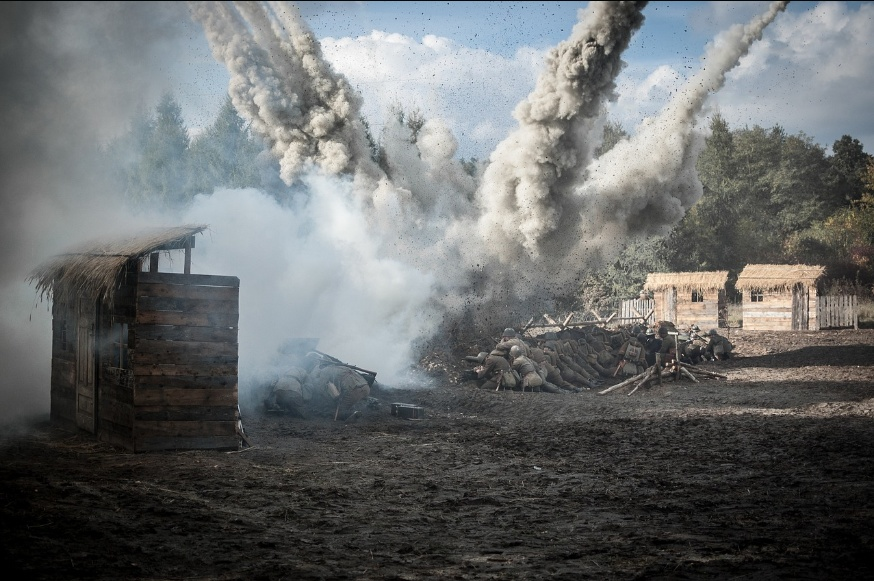 Or, d'après la bible, il y aurait de quoi estimer que du sang fut versé, ne serait-ce - qu'au moment du déluge. - et puis aussi pour les stigmates des uns ou des autres (par exemple Thérèse Neumann) ne fut-ce pas Dieu qui leur donna ces stigmates et qui fit "verser" du sang? - Et même si on considère que l'expression "verser le sang" correspondrait à ce que du sang fut versé à la suite d'une tentative de tuer, Dieu ne fit-il pas lui-même verser le sang dans le cadre d'actions de justice divine? (par exemple des guerres, comme parfois évoqué dans le livre du Ciel).
2. Le Fils, le sang, la cène, l'eucharistie "Seul Dieu peut juger parce que lui n'a jamais versé le sang de personne. Il est l'innocent qui a donné sa vie." Le Fils, au moment de la cène, n'aurait-il pas versé son sang? Et l'Eucharistie ne serait-elle aussi du Sang?
est Chair, mais elle est Sang aussi. Me voici sous l’aspect du Sang. Regarde comme il exsude et ruisselle sur mon visage défiguré, comme il coule le long de mon cou, sur ma poitrine, sur ma tunique, doublement rouge car trempée de mon Sang. Regarde comme il mouille mes mains liées et descend jusqu’aux pieds, au sol. Je suis vraiment celui qui presse le raisin dont parle le prophète, mais c’est moi que mon amour a pressé. Bien peu nombreux sont ceux qui savent évaluer le prix infini de ce Sang, que j’ai prodigué jusqu’à la dernière goutte pour l’Humanité, et jouir de ses très puissants mérites."
3. Le Fils, le sang et la crucifixion Le Fils, du temps de sa première venue sur terre n'aurait-il pas aussi versé son sang pour les péchés des hommes? Et même versé jusqu'à la dernière goutte?
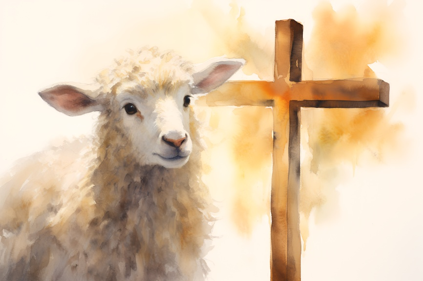Je demande maintenant à celui qui sait le regarder et comprendre d’imiter
et d’essuyer avec son amour le visage ensanglanté de son Dieu. Je demande maintenant à celui qui m’aime de panser avec son amour les blessures que les Humains ne cessent de me faire. Je demande maintenant surtout de ne pas laisser ce Sang se perdre, de le recueillir avec une attention infinie, jusqu’à la plus petite goutte, et de le répandre sur ceux qui ne se soucient pas de mon sang.
C’est un Jésus triste, très triste, dont les larmes se mêlent au sang, un Jésus contusionné, dépeigné, sale, la tunique déchirée, les mains liées et la couronne bien enfoncée sur la tête. Je vois distinctement la couronne de grosses épines, pas longues mais serrées, qui pénètrent dans les chairs et les écorchent. Chaque cheveu a sa goutte de sang et le sang ruisselle du front sur les yeux, le long du nez, descend le long de la barbe et du cou, sur la tunique, tombe goutte à goutte sur les mains et semble plus rouge tant elles sont pâles, mouille la terre après avoir mouillé les pieds. Mais le plus triste à voir est le regard... Il demande pitié et amour, et trahit sous une mansuétude résignée, une douleur infinie.
1er septembre 1899 L'obéissance était tout pour Moi et Je veux qu'elle soit tout pour toi. C'est l'obéissance qui m'a fait naître et c'est elle qui m'a fait mourir. Les blessures que Je porte sur mon corps sont toutes des blessures et des marques que l'obéissance m'a infligées. Tu as raison de dire qu'elle est comme la plus puissante guerrière, armée de toutes sortes d'armes pour blesser. En fait, -elle ne m'a pas laissé une seule goutte de mon sang, -elle a déchiré ma chair en pièces, -elle a disloqué mes os pendant que mon pauvre Cœur, épuisé et sanglant, cherchait Quelqu'un de compatissant pour le consoler. Agissant comme le plus cruel des tyrans, l'obéissance ne fut satisfaite qu'après -m'avoir sacrifié sur la croix et -m'avoir vu rendre mon dernier souffle comme victime d'amour. Le livre du Ciel
13 novembre 1899 Ah! L’homme est trop ingrat! De tous côtés, il me contraint à le châtier. Il m'arrache lui-même les châtiments des mains. Si tu savais comme je souffre quand je déploie ma Justice. Mais c'est l'homme lui-même qui me force. Par le fait que J'ai acheté sa liberté au prix de mon Sang, il devrait m'être reconnaissant. Le livre du Ciel
Maria Valtorta / L'Évangile tel qu'il m'a été révélé. épisode : L'envoi en mission des Douze
6:36:51 (texte repris de la transcription youtube) - Nous sommes prêts à combattre pour toi et à verser notre sang promettent unanimement les apôtres - Je ne verserai d'autres Sangs que celui du Saint et des Saints.
«Io non verserò altro sangue che quello del Santo e dei santi».
passage qui précède (pour donner le contexte) :6:35:49 : L'heure est venue pour vous d'évangéliser je suis à peu près au milieu de ma vie publique pour préparer les cœurs à mon royaume c'est le moment que mes disciples aussi prennent part à la préparation de ce royaume. Les rois agissent ainsi quand ils ont décidé la conquête d'un royaume d'abord ils enquêtent et fréquentent les personnes pour se rendre compte des réactions et les gagner à l'idée qu'il poursuivent puis il développe la préparation de l'entreprise en envoyant des éclaireurs sûr dans les pays à conquérir et il les envoie de plus en plus nombreux jusqu'à ce que soit connu le pays dans toutes ces particularités géographiques et morales puis après cela le roi achève son œuvre en se proclamant roi du pays et en se faisant couronner et il coule du sang pour y arriver car les victoires coûtent Toujours du Sang.
4. Le Fils, le sang et le Ciel
Le Ciel tout entier chante aujourd'hui le sanctus à l'Agneau 🐑 dont le sang fut versé pour la rédemption de l'Humanité.
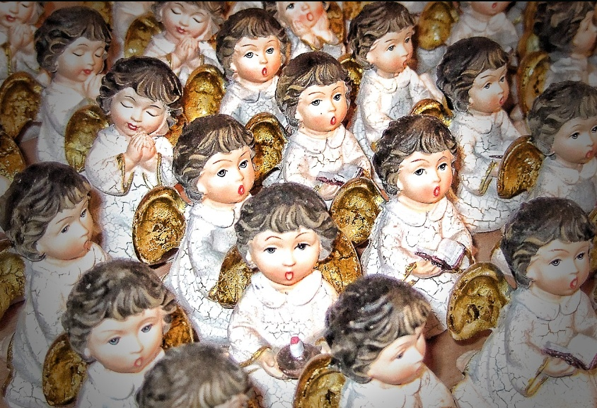
1ᵉʳ juillet, fête du précieux Sang
Une version
Une autre version
"Seul Dieu peut juger. Lui n'a jamais versé le sang de personne. Il est l'innocent qui a donné sa vie."
Le Fils, au moment de son passage sur terre (il y a à peu près 2000 ans), n'a pas versé le sang par l'épée.
5. Le Père et le sang Dans la phrase "Seul Dieu peut juger parce que lui n'a jamais versé le sang de personne. Il est l'innocent qui a donné sa vie."Dieu pourrait signifier Dieu le Père. Puisque cette phrase ne précise pas Dieu le Fils ou Dieu le Père, mais Dieu tout court. Or Dieu le Père (Trinité, trois en un.) n'aurait-il jamais versé le sang? Ceci semblerait difficile à concevoir, si Dieu est tout. Et s'il est trois en 1. C'est-à-dire ce qu'aurait fait le Fils, le Père l'aurait fait aussi.
Ne pas verser le sang suffirait à juger les hommes? ''Seul Dieu peut juger parce que lui n'a jamais versé le sang de personne.''
Certains Humanoïdes n'auraient pas non plus versé le sang d'autrui et pourtant, auraient-ils de quoi être juges comme Dieu? Cette phrase "Seul Dieu peut juger parce que lui n'a jamais versé le sang de personne." serait-elle valide? Serait-ce une raison suffisante, de ne jamais avoir versé par l'épée (ou autre arme ou autrement) le sang de personne, pour être juge des Humanoïdes? Certain(e)s Humanoïdes ne versèrent pas le sang par l'épée et ils(elles) n'auraient peut-être pas à être juges non plus?
Bilan : ne vaudrait-il pas mieux rédiger : Seul Dieu peut justement juger parce que c'est Dieu. Ou même, plus simplement : Seul Dieu peut justement juger. Plutôt que "Seul Dieu peut juger parce que lui n'a jamais versé le sang de personne." ?
Françoise Breynaert, lien du site internet
Ou d'un site internet (car elle en a peut-être plusieurs) ? Je vérifierai peut-être ceci plus tard. De mémoire je crois elle participa aussi à un site sur Marie. https://www.foi-vivifiante.fr/
https://www.foi-vivifiante.fr
Marion Sigaut, Claire Colombi
Marion Sigaut
J'ai écouté quelques vidéos de Marion Sigaut qu'elle fit à propos :
Voltaire, un traitre à la Nation au service des puissants - YouTube - Marion Sigaut
Le Voltaire public, le Voltaire privé. Vers 14:40.
- de la révolution française et de son aspect anti-Chrétien - des Enfants/de la pédocriminalité - de Voltaire. (Voltaire qui me sembla relativement s'être parfois comporté comme une canaille anti-Chrétienne. Mais son "canaillisme" aurait peut-être à trouver une certaine indulgence car il fut peut-être sous possession "démoniaque": - mépris pour le peuple : - affaire Damien - comportement plus ou moins odieux avec divers Gens de son époque (XVIIIᵉ siècle) - mensonges. Mensonges réalisés en plus avec une sorte de panache.)
Il y a plusieurs années, j'avais plutôt incompris que W.A Mozart aurait refusé de le rencontrer. Mais depuis au moins quelques années, je vois les choses différemment.
Marion Sigaut - Le récentisme
Marion Sigaut me sembla aussi s'opposer au récentisme (plutôt prôné par Pierre Dortiguier). Pour ma part, je dus me demander si le récentisme fut une sorte de "lubie" académique. Ce me semblerait assez juste que l'on pourrait se demander ce qu'il s'est passé pendant quelques siècles (vers l'an 1000). (Autrement rédigé, il y aurait de quoi se le demander). Mais ce ne fut pas pour autant qu'il ne se soit rien passé. (Entre autres : Hildegarde de bingen, Thomas d'Aquin).
Me sembla essayer de faire valoir que le moyen-âge ne fut pas une époque aussi sombre que ceci fut parfois présenté. Je vis quelques vidéos où elle intervint.


 "Oh ! amis ! Savez-vous par quel sentier vient Satan ? Trois sont les chemins généralement battus, et il en est un qui ne manque jamais. Trois :
"Oh ! amis ! Savez-vous par quel sentier vient Satan ? Trois sont les chemins généralement battus, et il en est un qui ne manque jamais. Trois : 

 "Ma volonté est en perpétuel mouvement. Elle ne s'arrête jamais. Si son mouvement cessait, ce qui est impossible, la Création n'aurait plus de vie, le Soleil, le ciel étoilé, les arbres, l'eau, le feu, les créatures, tout se dissoudrait dans le néant Ceci signifie que ma Volonté avec son évolution éternelle, -est la vie de toute chose créée, -Elle lie tout, -Elle est plus que l'air qui permet de respirer, développer, pousser tout ce qui sort de nos mains. Tu comprends donc l'affront subi par les créatures, qui, alors qu'Elle est la vie de tout et le centre de toute chose, sans Elle rien ni aucun bien n'existerait, ne veulent reconnaître ni sa domination, ni que sa vie qui coule en elles C'est pourquoi celle qui reconnaît la Vie de ma Volonté en elle et en toute chose, est le triomphe de notre Volonté et la conquête de nos victoires, elle est la contrepartie de notre amour au mouvement perpétuel, notre Volonté la liant à toute la Création, lui faisant faire tout le bien opéré par ma propre Volonté. Par conséquent, tout lui appartient et moi Je l'aime tellement, au point de ne savoir rien faire sans elle, du fait que, en vertu de ma Volonté, nous sommes la même vie, le même amour, une seule palpitation, un seul soupir." Le livre du Ciel tome 19, téléchargé depuis lumenluminis
"Ma volonté est en perpétuel mouvement. Elle ne s'arrête jamais. Si son mouvement cessait, ce qui est impossible, la Création n'aurait plus de vie, le Soleil, le ciel étoilé, les arbres, l'eau, le feu, les créatures, tout se dissoudrait dans le néant Ceci signifie que ma Volonté avec son évolution éternelle, -est la vie de toute chose créée, -Elle lie tout, -Elle est plus que l'air qui permet de respirer, développer, pousser tout ce qui sort de nos mains. Tu comprends donc l'affront subi par les créatures, qui, alors qu'Elle est la vie de tout et le centre de toute chose, sans Elle rien ni aucun bien n'existerait, ne veulent reconnaître ni sa domination, ni que sa vie qui coule en elles C'est pourquoi celle qui reconnaît la Vie de ma Volonté en elle et en toute chose, est le triomphe de notre Volonté et la conquête de nos victoires, elle est la contrepartie de notre amour au mouvement perpétuel, notre Volonté la liant à toute la Création, lui faisant faire tout le bien opéré par ma propre Volonté. Par conséquent, tout lui appartient et moi Je l'aime tellement, au point de ne savoir rien faire sans elle, du fait que, en vertu de ma Volonté, nous sommes la même vie, le même amour, une seule palpitation, un seul soupir." Le livre du Ciel tome 19, téléchargé depuis lumenluminis 


 (et pas une seule, sur au moins 100 vidéos de sa chaine (J'ai pas compté toutes 😐)), je vis que "Colombine" avait une statue J*sus à sa droite, à côté d'elle. Cette statue représente le Fils avec une main levée comme s'il était en train de prêcher certaines paroles. Est-ce que cette statue ferait style : "Je vous parle, c'est comme si c'était J*sus qui vous parle." Genre c'est J*sus qui vous parle. Genre je suis en train de vous prêcher la bonne parole parce qu'à côté de moi, vous voyez, y a une statue de Jé*us. Écoutez c'est J*sus qui est en train de vous parler.
(et pas une seule, sur au moins 100 vidéos de sa chaine (J'ai pas compté toutes 😐)), je vis que "Colombine" avait une statue J*sus à sa droite, à côté d'elle. Cette statue représente le Fils avec une main levée comme s'il était en train de prêcher certaines paroles. Est-ce que cette statue ferait style : "Je vous parle, c'est comme si c'était J*sus qui vous parle." Genre c'est J*sus qui vous parle. Genre je suis en train de vous prêcher la bonne parole parce qu'à côté de moi, vous voyez, y a une statue de Jé*us. Écoutez c'est J*sus qui est en train de vous parler. Peut sembler relativement adapté, pour un Occidental mental
Peut sembler relativement adapté, pour un Occidental mental